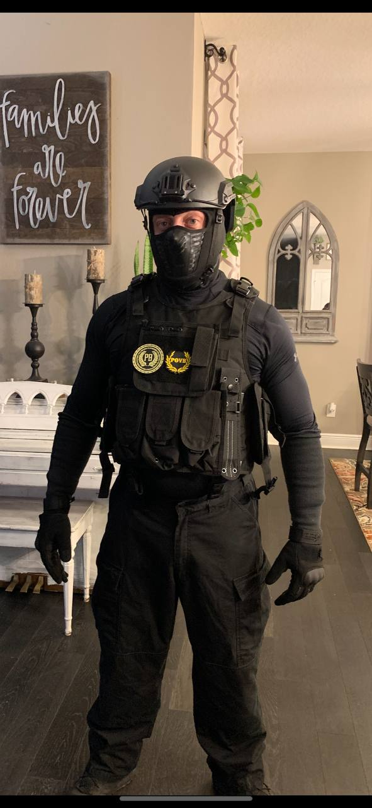
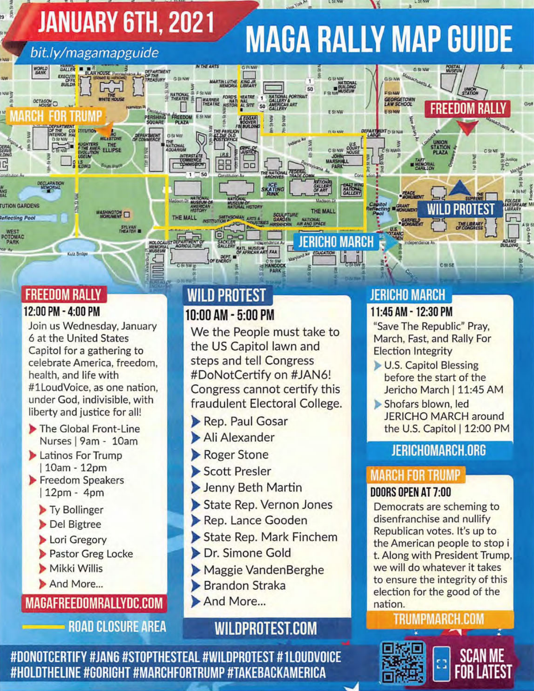
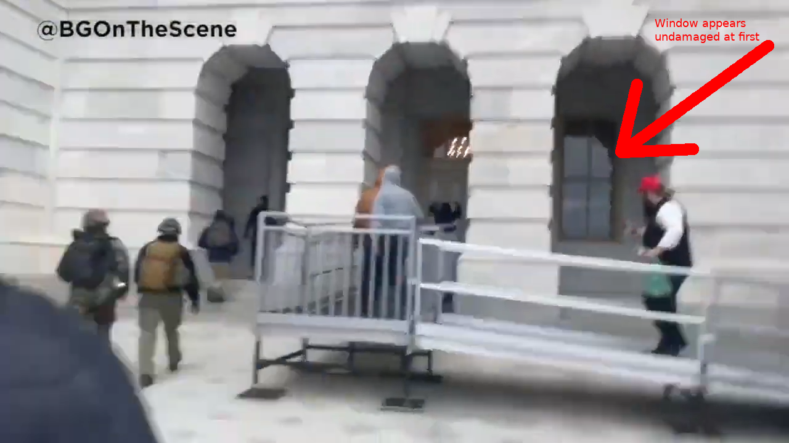
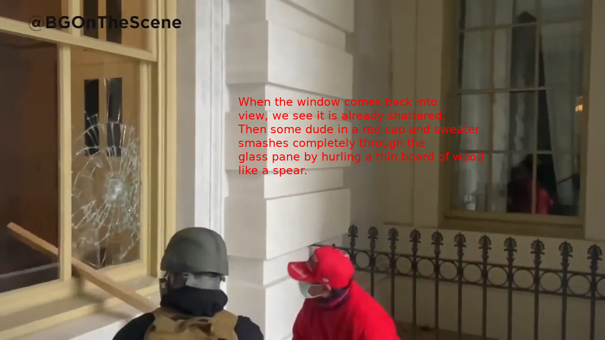
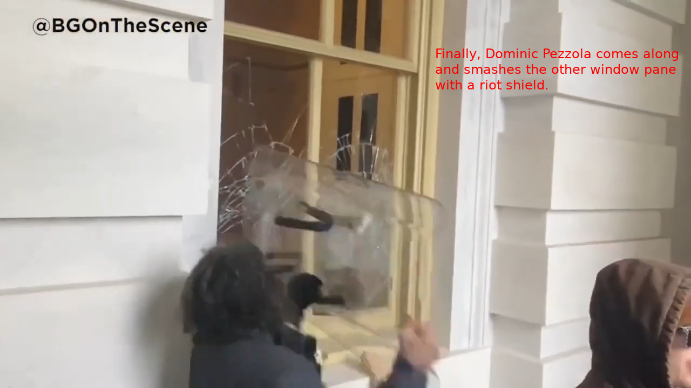
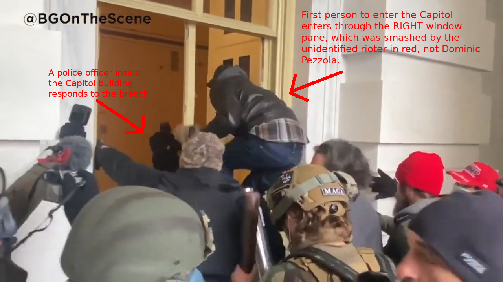
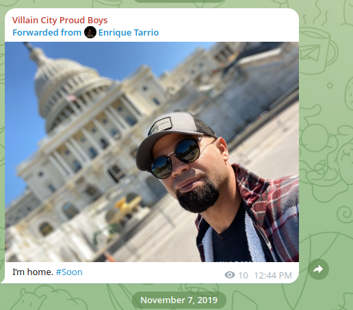
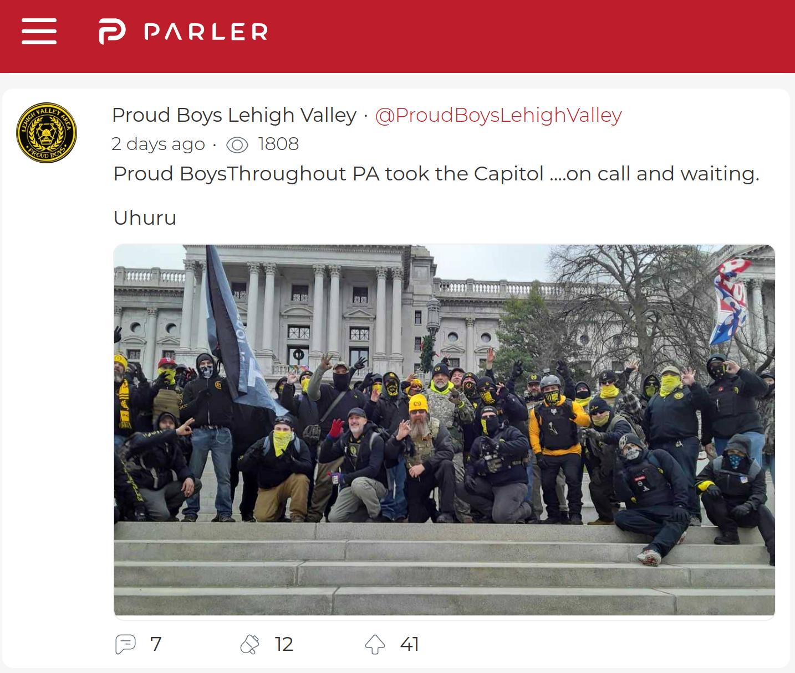
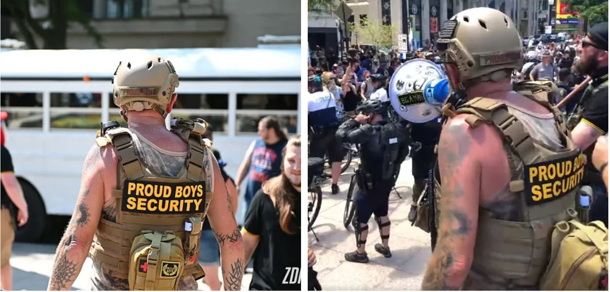

Date |
Incriminating Message |
Assessment/Comments |
||||||||||||||||||||||||||||||||
|
Indictment reads:
14. a. On November 5, 2020, BIGGS posted on social media, “It's time for fucking War
if they steal this shit,” referring to the Presidential election.
Full context (from Parler):
|
Included in the indictment to establish that the Proud Boys were angry about the outcome of the 2020 Presidential election, which they believe was
stolen, and that they often expressed their anger using violent rhetoric. Meant to establish motive, obviously.
The indictment omits the part of Joe Biggs' post that grounds his threat about "fucking War" in a more specific historical context. Biggs is likely refering to media reports at the time (whether "fake news" or not) that were claiming that Republican election monitors were blocked from effectively monitoring the vote count in certain locales. |
|||||||||||||||||||||||||||||||||
|
Indictment reads:
13. a. On November 6, 2020, TARRIO posted a message that read, “The media constantly
accuses us of wanting to start a civil war. Careful what the fuck you ask for we
don't want to start one...but we will sure as fuck finish one.”
Full context (from Parler):
|
Included in the indictment to establish that the Proud Boys used threatening language, suggesting to a jury that the Proud Boys
are prone to violence.
The indictment omits the original context. Enrique Tarrio's Parler post was responding to a tweet from @Javiercousteau (see archive.org version, he goes by @doubleccoustea now), making the absurd, histrionic claim that "[Proud Boys in DC are] approaching black people with handcuffs and threatening to kidnap folk" and suggesting that "KILL FIRST ASK LATER" is an appropriate counter-measure. Tarrio's post is meant to ironically juxtapose the media focus on violent behavior from the Proud Boys with violent rhetoric coming from a political enemy of the Proud Boys. |
|||||||||||||||||||||||||||||||||
|
Indictment reads:
13. b. On November 12,2020, TARRIO posted a message that read, “Fuck Unity. No
quarter. Raise the black flag.”
Full context (from Parler):
|
Included in the indictment to suggest to a jury that Enrique Tarrio (and by extension the Proud Boys as a collective) were not interested in peace, and only interested in violence. Meant to establish motive, obviously. | |||||||||||||||||||||||||||||||||
|
Indictment reads:
13. c. On November 16, 2020, TARRIO posted a message that read, “If Biden steals this
election, [the Proud Boys] will be political prisoners. We won't go quietly...I
promise.”
Full context (from Parler):
|
Included in the indictment to establish the Proud Boys were unhappy with the outcome of the 2020 Presidential election, and that they often expressed their unhappiness with threatening language. Perhaps also included to suggest that the Proud Boys were desperate (believing they will be political prisoners) and therefore prone to violence. Meant to establish motive, obviously. | |||||||||||||||||||||||||||||||||
|
Indictment reads:
14. b. On November 24, 2020, BIGGS, in response to a social media post calling for unity
in response to the results of the presidential election, posted, “No bitch. This is war”
Full context (from Parler):
|
Included in the indictment to suggest that Joe Biggs, and by extension the Proud Boys as a collective, were upset about the outcome of the election to the extent that they were not interested in peace, and only interested in violence. Meant to establish motive, obviously. | |||||||||||||||||||||||||||||||||
|
Indictment reads:
13. d. On November 25, 2020, TARRIO reposted a social media post by Joe Biden that
stated, “We need to remember: We're at war with a virus — not with each other.”
TARRIO then posted, “No, YOU need to remember the American people are at
war with YOU. No Trump... No peace. No quarter.”
Full context (from Parler):
|
Included in the indictment to suggest that Enrique Tarrio, and by extension the Proud Boys as a collective, were angry about the outcome of the election, which they believe was stolen, and therefore were disinterested in moving forward peacefully, threatening violence if their grievances are not addressed. | |||||||||||||||||||||||||||||||||
|
Indictment reads:
14. c. On November 27, 2020, NORDEAN posted on social media, “We tried playing
nice and by therules, now you will deal with the monster you created. The spirit of
1776 has resurfaced and has created groups like the Proudboys and we will not be
extinguished. We will grow like the flame that fuels us and spread like love that
guides us. We are unstoppable, unrelenting and now ...unforgiving. Good luck to
all you traitors of this country we so deeply love ...you're going to need it.”
Full context (from Parler):
|
Included in the indictment to suggest that Ethan Nordean, and by extension the Proud Boys as a collective, were angry about the outcome of the election, believing it was stolen, and used incendiary and melodramatic language implying a threat of violence. Meant to establish motive, obviously. | |||||||||||||||||||||||||||||||||
|
Indictment reads:
14. d. On November 27, 2020, REHL posted on social media, “Hopefully the firing
squads are for the traitors that are trying to steal the election from the American
people.”
|
Included in the indictment to establish that Zach Rehl, and by extension the Proud Boys as a collective, were angry about the outcome of the election, believing it was stolen, and used incendiary language implying a threat of violence. Meant to establish motive, obviously. | |||||||||||||||||||||||||||||||||
|
Indictment reads:
29. On December 19, 2020, shortly after plans for the rally on January 6 were publicly
announced, BIGGS sent a private message to TARRIO in which he stated that the Proud Boys
“recruit losers who wanna drink.” BIGGS suggested, “Let's get radical and get real men.”
Full context from recovered text messages (Government Exhibit 525-5):
|
Included in the indictment to emphasize that the Proud Boys upped their recruitment efforts in response to the
announcement of the upcoming Jan 6 rally in DC, and that they were interested in getting "radical" and recruiting "real men",
suggesting to the jury that the Proud Boys were now interested mostly in recruiting people who are willing to engage in
political violence. This is also meant to suggest to the jury that the
Proud Boys started conspiring to storm the Capitol as early as December 19, 2020, beginning with a ramped up recruitment
effort.
The indictment omits Joe Biggs' follow up posts 12 seconds later. Biggs seems to clarify that he didn't mean anything in a "crazy way", but the meaning of Biggs' post is ambiguous due to the typo. Further clarifying posts from Biggs somewhat soften the impact of "get radical and [recruit] real men" by clarifying that Biggs mostly meant that the Proud Boys "need to portray a more masculine vibe" that better reflects how the Proud Boys see themselves. Biggs seems primarily concerned with how the Proud Boys are perceived, which is appropriate given that Biggs was put in charge of "marketing" later that week when the MOSD chapter was established. However, Biggs' focus on public perception is of course compatible with the intended takeaway of this evidence, which is that Biggs (and by extension, the Proud Boys collectively) began to recruit "real men" willing to "stand up and fight" (i.e. engage in political violence). However, Enrique Tarrio never responds to anything Biggs says here, so the exhibit doesn't really demonstrate that the Proud Boys actually ramped up recruitment efforts in any significant way specifically in preparation for Jan 6. |
|||||||||||||||||||||||||||||||||
|
Indictment reads:
31. On December 20, 2020, PERSON-3 posted a message to the MOSD Leaders Group
that stated, “I am assuming most of the protest will be at the capital building given what's going
on inside.” In response, TARRIO proposed a video chat, which would take place on December 21,
to discuss the MOSD and January 6.
|
Included in the indictment to suggest to the jury that the Proud Boys were focused on the US Capitol building as early as 12/20/2020, and
to establish that the Proud Boys were making plans and having Zoom meetings about Jan 6 at that time.
However, like most of the prosecution's evidence, these Telegram posts merely establish that the Proud Boys were planning something, but do nothing to establish WHAT the Proud Boys were planning. For a typical jury member, or anyone unfamiliar with the the history of the Proud Boys and political rallies throughout 2020, it's easy to read these posts and assume (due to basic confirmation bias) that any discussion about planning for Jan 6, or any mention of the Capitol building, automatically confirms the prosecution's seditious conspiracy case. After all, what else would the Proud Boys be planning on doing there, if not storming the Capitol? But the indictment misleadingly omits significant historical context here that reveals this exchange to be nothing more than typical event planning. There were MANY rallies attended by the Proud Boys throughout 2020. In November and December, many of these rallies were organized by a coalition of conservative activist loosely united under the "Stop The Steal" slogan/hashtag, including two rallies in Washington D.C. on November 14 and December 12, both of which were very similar to Jan 6. When the Proud Boys attended a rally, their activities typically involved marching through the streets chanting slogans, giving speeches in front of crowds, and sometimes providing security for high-profile conservatives and/or ordinary pro-Trump protesters. This is why Johnny Blackheard asked Enrique Tarrio "what locations do you absolutely need to stop at?". Blackbeard believed it was likely that Tarrio would be giving a speech on stage on Jan 6, which would necessarily affect overall plans for that day, especially given Tarrio's association with Latinos for Trump, an organization that reserved a stage on Jan 6 near the US Capitol in order to hold a protest/demonstration. Blackbeard then mentions his belief that the protest would mostly be centered around the Capitol building. Far from suggesting any seditious plans, Blackbeard's statement here is simply a reasonable assumption, given that:
The indictment also uses misleading language to suggest that Tarrio setup the Zoom meeting IN RESPONSE to Blackbeard's statement about the Capitol, thereby subtly connecting the Capitol building to whatever the Proud Boys discussed during that Zoom call. But Tarrio's response came over 20 minutes after Blackbeard's comment, and could just as easily be interpreted as responding to Blackbeard's earlier post asking where Tarrio "absolutely need[s] to stop at" on Jan 6. |
|||||||||||||||||||||||||||||||||
|
Indictment reads:
33. On December 27, 2020, TARRIO created another encrypted messaging group to
recruit potential members of the MOSD (the “MOSD Prospect Group”). TARRIO stressed that
members of the chapter were expected to follow directions of MOSD leadership, which TARRIO
and others emphasized by telling members, among other things, to “Fit in [] or fuckoff.”
Full context from Telegram post announcing MOSD (Govt Exhibit 513-1):
Full context from
MOSD Zoom Call video
(see full transcript):
Full context from MOSD MAIN Telegram group:
|
Included in the indictment to suggest to the jury that the "Ministry of Self Defense" (MOSD) chapter, created by
Proud Boy chairman Enrique Tarrio, was a strict chapter with a militaristic structure, created mostly
for the purpose of planning to storm the US Capitol on Jan 6. The indictment focuses on the rigidly non-democratic
nature of MOSD, exemplified by the catch-phrase "fit in or fuck off".
The Proud Boys as an organization is divided into semi-autonomous regional chapters. MOSD was a new national-level chapter of the Proud Boys (with multiple associated Telegram chat groups) created on December 20, 2020. The indictment oversells the level of strictness enforced by Tarrio and the MOSD leadership. It was certainly no democracy, as is clear from the initial announcement on Telegram informing other Proud Boys of the new MOSD chapter. However, the tone and verbiage used by MOSD leaders Zach Rehl and Enrique Tarrio during the 12/30/2020 MOSD Zoom meeting (full transcript) reveals that the MOSD chapter wasn't always quite as strict as the indictment would have us believe: The phrase "fit in or fuck off" first appeared on the MOSD Application Form that Tarrio required prospective members to sign before they were permitted to join MOSD. However, Tarrio only actually said this phrase once on Telegram (in the MOSD MAIN chat group) when another Proud Boy named Brien James criticized the structure of MOSD and disapproved of Joe Biggs being assigned a leadership role. Enrique Tarrio told Brien James to "Fit in...or fuck off". This was really the only occasion (at least on Telegram) where Tarrio strictly enforced anything in the MOSD chapter. Also, simply reading through a typical Proud Boy MOSD Telegram chat - often filled with silly memes and vulgar jokes - should immediately dispel the notion that the Proud Boys were even capable of being particularly serious on a consistent basis. The indictment also obscures the actual purpose of the MOSD chapter and the historical context that prompted its creation. The indictment suggests MOSD was created specifically to plan for storming the Capitol on Jan 6. But Telegram chats and video of the 12/30/2020 MOSD Zoom meeting makes it absolutely clear that MOSD was created to address discipline issues that occurred during previous rallies in Washington DC, specifically the December 12th, 2020 rally where Proud Boy Jeremy Bertino (NobleBeard on Telegram) was stabbed and Tarrio had difficulty maintaining control of hundreds of Proud Boys as they marched in formation through the streets of Washington DC. Thus, during the 12/30/2020 Zoom meeting, when Jeremy Bertino emphasized the strictness of MOSD (repeating the catch-phrase "fit in or fuck off"), he also explained why the new MOSD chapter was so strict, and it had nothing to do with any plans to storm a Capitol: This is consistent with Enrique Tarrio's post in the "Skull and Bones" Telegram group chat (Government Exhibit 500-69), where he elaborates on the purpose of the MOSD chapter, saying it is meant to prevent aggressive and undisciplined behavior at national events, and make it easier to control and direct large numbers of Proud Boys while marching in formation at rallies: Additionally, the phrase "fit in or fuck off" appeared first on the MOSD Application Form (see the archived original Google doc) that Enrique Tarrio made all prospective MOSD members sign, which included a list statements that prospective members had to promise to agree to in order to join MOSD. But the application form also contains very compelling exculpatory evidence, suggesting the Proud Boys had no intention of initiating violence on January 6th. All prospective MOSD members had to agree to the statement:
I will always act in self defense and I will never initiate a confrontation. Is this something you can agree on?
*
This is also consistent with Enrique Tarrio's comments during the December 30th, 2020 MOSD Zoom call (full transcript), where he explains that the purpose of the MOSD chapter is to ensure the Proud Boys always act defensively rather than offensively, and that individual Proud Boys do not run off and act agressively during rallies: The MOSD Zoom meeting held on December 30, 2020 (see full transcript), available on video in its entirety, is very strong exculpatory evidence. During this Zoom call, the Proud Boys discussed the purpose of the MOSD chapter for over an hour and a half, yet there is zero discussion about storming the Capitol or doing anything illegal. The entire discussion is mostly about addressing disciplinary issues experienced during the last rally, and establishing new protocols (splitting up into small groups, not getting drunk or stoned) to make it easier to control and direct large numbers of Proud Boys during rallies. |
|||||||||||||||||||||||||||||||||
|
Indictment reads:
34. On December 27, 2020, Donohoe reposted a message to prospective members in
the MOSD Prospect Group in which he stated that the D.C. government was expected to limit
access to Washington, D.C., on January 6. Donohoe's message stated “They want to limit the
presence so that they can deny Trump has the People's support. We can't let them succeed. This
government is run FOR the People, BY the People....Congress needs a reintroduction to that fact.”
Full context from MOSD MAIN Telegram group:
|
Included in the indictment probably because it establishes the Proud Boys planned in advance to travel to Washington D.C.,
and because Donohoe's statement can be interpreted as directly threatening Congress.
Donohoe's full post reads more like a helpful travel advisory than some kind of threat. Donohoe is basically exhorting the other Proud Boys to show up in Washington DC in defiance of Mayor Bowser's attempts to limit access to the city, which Donohoe clearly views as an attempt to prevent Trump supporters from exercising their right to protest ("limit the 1st Amendment") in D.C. |
|||||||||||||||||||||||||||||||||
|
Indictment reads:
36. On December 28, 2020, TARRIO posted a message in the MOSD Prospect Group
in which he stated that the “DC trip” would consist of “two groups” — the MOSD and everyone
else — and that no one should be in colors.
Full context from MOSD MAIN Telegram group:
|
Included in the indictment presumably because it establishes some level of planning (dividing into two groups), and
establishes that the MOSD chapter (Group 1) was a special chapter with a special mission.
Once again, the full Telegram post contains exculpatory information that was omitted in the indictment. In the full post, Enrique Tarrio says that the MOSD will be running "training exercises" during "the 5th at night and 6th throughout the day". This is obviously not particularly compatible with the prosecution's seditious conspiracy case. However, it is quite consistent with Tarrio's announcement posted the next day (12/29/2020) in the MOSD MAIN Telegram group, where he said "we are going to be using the 6th as a test [of the new MOSD policies]". Additionally, Tarrio also tells Group 2 to "conduct themselves as gentlemen and always keep themselves in a self defense mindset". This statement is also somewhat exculpatory, and therefore it was unsurprisingly excluded from the indictment. |
|||||||||||||||||||||||||||||||||
|
Indictment reads:
37. On December 29, 2020, TARRIO posted a message on social media that the Proud
Boys planned to “turn out in record numbers on Jan 6th but this time with a twist .... We will not
be wearing our traditional Black and Yellow. We will be incognito and we will be spread across
downtown DC in smaller teams. And who knows ... we might dress in all BLACK for the
occasion.” At different times, NORDEAN, BIGGS, REHL, and Donohoe reiterated that Proud
Boys members should avoid wearing Proud Boys colors on January 6, 2021.
Full context from Parler:
|
This Parler post was extremely important to the prosecution's seditious conspiracy case. In a public announcement on Parler,
Enrique Tarrio informed his thousands of followers that the Proud Boys will
not be wearing their traditional
black and yellow uniforms on January 6, and will instead show up incognito (in plain clothes). Tarrio also suggests that some or
all of the Proud Boys that show up in D.C. on January 6 will be dressed in all black.
Firstly, Enrique Tarrio's statement that the Proud Boys will "spread across downtown DC in smaller teams" is already mostly incompatible with the prosecution's seditious conspiracy case, because it's not really clear why spreading out in small teams "across downtown DC" makes any sense if the goal is to attack the Capitol building. The indictment glosses over this, focusing on the fact that the Proud Boys dressed incognito on Jan 6 instead of "wearing Proud Boys colors that had been prominently displayed at previous events." Jan 6 was not the first time the Proud Boys considered showing up to an event without wearing the traditional black and yellow Proud Boy club colors. For example, back in September, 2020, before Trump even lost the election (and thus before the Proud Boys would have had any motive to storm the Capitol), one Proud Boy, concerned about increased public scrutiny after the Proud Boys were name-dropped on national television, commented in a Telegram chat for Proud Boy chapter presidents: And in November of 2020, Enrique Tarrio forbade the Proud Boys from wearing their usual club colors on multiple occasions (see Govt Exhibits 514-12 and 514-15), and ordered Jeremy Bertino to "make sure...no colors" (Govt Exhibit 530-2) when attending a rally in North Carolina. Then in December, before attending the "Million MAGA March" rally in D.C., Enrique Tarrio posted on Telegram (see Government Exhibit 548-2), emphatically ordering the Proud Boys to NOT wear colors on the Friday before the main event: Clearly, the Proud Boys occasionally had reasons to avoid wearing their usual club colors, even when not involved in any seditious conspiracies to storm Capitol buildings. Yet throughout the trial, the prosecution maintained that the Proud Boys dressed incognito on January 6th expressly because they planned to storm the Capitol building and wanted to avoid being easily identified. The prosecution lumped the "no colors" policy together with other preparations made by the Proud Boys in advance of Jan 6, including the fact that the Proud Boys came to D.C. with protective gear (body armor) and walkie-talkies, arguing that all of these preparations were part of a pre-planned conspiracy to attack the Capitol. (See paragraph 28 of the indictment.) A Sentencing Memorandum submitted by the prosecution reads:
Sentencing memorandum reads:
The seditious conspiracy began at least as early as December 19, 2020.
Tarrio, Nordean, Biggs, Rehl, and other leaders of the Proud Boys organization intentionally
recruited men prepared to engage in physical violence, if necessary. They organized a return to
Washington, D.C., which guidance included what to wear (e.g., no colors), what to bring (e.g.,
protective gear and communication equipment), and what to do (e.g., fit in or fuck off).
This is one of the least defensible claims made by the prosecution. Firstly, the Proud Boys regularly wore protective gear at many rallies they attended over the years, and Jan 6 was no different. Secondly, there is overwhelming evidence that preparations made by the Proud Boys for Jan 6 (including bringing protective gear and not wearing colors) was in anticipation of violent conflict with Antifa, the Proud Boys' long-time street rivals at political rallies and protests. The term "Antifa" is an umbrella term referring to various regional anti-fascist or anarchist collectives (labeled "Anarchist Violent Extremists" by the FBI), known to disrupt or counter-protest events they consider fascist, such as pro-Trump rallies or protests. Organized anti-fascist groups wearing "black bloc" showed up at various Black Lives Matter protests throughout 2020. The Proud Boys have a long history of violent conflict with Antifa, going back to 2017 at least. The Proud Boys also clashed with Antifa on the streets of D.C. after dark during previous MAGA rallies held on November 14th and December 12th of 2020, so the Proud Boys had every reason to expect another fight with Antifa in D.C. on January 6, 2021. Indeed, US Capitol Police intelligence, the US Secret Service, and the US Park Police all predicted that violent street fighting would break out after dark between the Proud Boys and Antifa on January 6th, just like it did at previous D.C. rallies. In Tarrio's Parler post, his emphasis on the word "black", as in "we might dress in all BLACK" and "[t]he night calls for a BLACK tie event", is a clear reference to the "black bloc" style clothing typically worn by anti-fascist groups at protest events. Other Proud Boys, including Joe Biggs, also posted on Parler to reiterate what Tarrio said about dressing incognito on January 6th. These other posts leave little doubt that the decision to not wear colors on Jan 6 was directly related to the Proud Boys' ongoing feud with Antifa: The mischievous, mocking tone of these Parler posts is consistent with the interpretation that Tarrio and the other Proud Boys posted this information publicly on Parler to confuse or intimidate Antifa, with the goal of ultimately being able to infiltrate or ambush Antifa. This interpretation is consistent with the fact that Enrique Tarrio's post ends with a cryptic remark, omitted in the indictment: "48 Laws of Power #3 #4 #14 #15 #17 #29 #37 #39 #48". This is a clear reference to the rules enumerated in Robert Greene’s 48 Laws of Power, including Rule #3: conceal your intentions, Rule #14: pose as a friend, work as a spy, and Rule #17: keep others in suspended terror - cultivate an air of unpredictability. This interpretation is confirmed by the December 30th, 2020 MOSD Zoom planning meeting (see full transcript), where Enrique Tarrio explained that the purpose of publicly announcing the "no colors" policy was to conceal the number of Proud Boys in D.C. on Jan 6, since Tarrio expected a significantly smaller number of Proud Boys (in comparison with previous D.C. rallies) to attend. This is consistent with Proud Boy Bill Whicker III's Parler post, where he coyly says "Maybe a few? Maybe a thousand? Antifa will never know. They better think twice about attacking anyone this time. We are everywhere! Or are we?" And it's also consistent with another statement from Tarrio on Telegram (see Govt Exhibit 514-47) where he explains that one purpose of the "no colors" announcement on Parler was to cultivate fear among Antifa. And it's further corroborated by a statement from Joe Biggs in the MOSD Telegram group (see Govt Exhibit 501-12), where he asks the other Proud Boys to avoid posting anything on social media prior to Jan 6 that would "give away locations or our numbers". All of this strongly suggests that the "no colors" policy was meant to enable the Proud Boys to avoid being recognized by Antifa on Jan 6. This is the most natural, straightforward interpretation of the relevant Parler posts. Indeed, after Tarrio announced the "no colors" policy on Parler, Business Insider published an article about the Proud Boys that simply took it for granted that the purpose of showing up "incognito" on Jan 6 was to blend in with Antifa, since this is the most natural interpretation. On top of all this, several posts from the private MOSD Ops Telegram chat group make it indisputably clear that the purpose of the "no colors"/incognito policy was to avoid being recognized by Antifa. In this chat, the Proud Boys were discussing dressing up in all black like Antifa. Some Proud Boys even posted pictures on Telegram showing off their attempts to dress like Antifa by donning all-black attire and protective gear. Both Joe Biggs and Enrique Tarrio commented that blending in with Antifa convincingly would require certain Proud Boys to hide their beards, because (according to Biggs and Tarrio) Antifa members typically do not have beards: These Telegram posts amount to indisputable, "smoking-gun" level evidence that the Proud Boys' purpose in showing up incognito in D.C. on Jan 6 was to try to blend in with Antifa. However, despite all this, the prosecution stubbornly maintained the position that the Proud Boys did not wear their normal colors on Jan 6 because they were planning to attack the police and storm the Capitol.

A MOSD Proud Boy shows off his attempt to look like Antifa
Finally, there are numerous discussions across multiple Telegram chat groups where the Proud Boys talk about personal protective equipment and body armor. Very often they mention a need for stab proof vests or stab proof body armor. Examples include the following Telegram posts from MOSD (see Government Exhibits 501-4, 501-25, and 501-45): Clearly, the Proud Boys were very interested in acquiring stab proof vests because of "recent events" at the previous D.C. rally in December, when multiple Proud Boys were stabbed while clashing with a counter-protester in the street. The prosecution claimed that the Proud Boys brought equipment and body armor to D.C. on Jan 6 in preparation for attacking the police. But a stab proof vest is useless against the police, who, unlike Antifa, do not use knives. To be fair to the prosecution, it's certainly possible that the Proud Boys' decision to not wear colors on Jan 6 was at least partially motivated by a desire to avoid the police to some extent, especially given the Proud Boys' increasing distrust and animosity towards the D.C. police after their experience at the previous D.C. rally on December 12, 2020 (see below discussion about the Proud Boys' changing relationship with the police prior to Jan 6). But the bulk of the Telegram evidence reveals that the "no color" policy was mostly an attempt to hide from and/or blend in with Antifa. In particular, there's no evidence the Proud Boys made any advance arrangements specifically to conceal their Jan 6 plans from the police, apart from basic OPSEC practices. On the contrary, since 2019, Enrique Tarrio was regularly in contact with D.C. Metro Police Officer Shane Lamond (a fact Tarrio was quite open about with the other Proud Boys), and Tarrio explicitly informed Officer Lamond, prior to January 6, that the Proud Boys would not be wearing colors and would attend in small numbers on Jan 6 (see message from Tarrio to Lamond on 12/19/2020 at 10:59 AM). Thus, it's clear that Tarrio didn't mind if the police knew that the Proud Boys would be relatively "under-staffed" on Jan 6, which is yet further evidence that the "no colors" policy was mostly to avoid detection from Antifa. |
|||||||||||||||||||||||||||||||||
|
Indictment reads:
38. On December 29, 2020, TARRIO posted a message to the MOSD Prospect Group to notify prospective members of a virtual meeting on December 30 to
explain "how this all works."
TARRIO advised the group that the MOSD "will have a top down structure" and advised prospects that, "if that's something you're not comfortable with"
they should not bother attending the live session. TARRIO advised that "upper tier leadership" would consist of a three-person "Operations" section
led by REHL, PERSON-3 and one other person. TARRIO advised that the "Marketing" section would be led by TARRIO, BIGGS and NORDEAN. TARRIO advised that
"second tier" leadership would consist of eight regional members.
|
Included in the indictment to once again emphasize the "top down structure" and rigid, strict nature of the MOSD chapter, suggesting to the jury
that the MOSD chapter was a militaristic organization created for the express purpose of storming the Capitol building. Additionally, this paragraph
suggests that the MOSD chapter involved a sophisticated level of planning, with references to a multi-tier leadership structure
with "Operations" and "Marketing" divisions. This shows evidence of planning, but does not show WHAT the Proud Boys were
planning for Jan 6, again relying on confirmation bias to kick in and lead the jury to interpret any evidence of planning as evidence of a
seditious conspiracy to storm the Capitol.
The indictment omits certain exculpatory or confusing parts of Tarrio's post, such as when he says "we are going to be using the 6th as a test", which doesn't really fit the seditious conspiracy case. More significantly, the indictment brings up the "virtual meeting on December 30". This Zoom meeting (which lasted over an hour and a half) is available on video in its entirety. (See also the complete transcript). This video stands out as very significant exculpatory evidence. Throughout the entire hour and a half long discussion between MOSD leaders, including the "big 3" (Enrique Tarrio, Joe Biggs and Ethan Nordean), there is not a single mention of storming the Capitol or anything remotely similar. The meeting clarifies the real purpose of the MOSD chapter, which was to address disciplinary problems experienced during the previous D.C. rally on December 14, when Proud Boy Jeremy Bertino was stabbed and Enrique Tarrio had difficulty maintaining control of marching formations. During the meeting the Proud Boys discuss establishing new protocols (like splitting up into small groups) to make it easier to stay in formation while marching through the streets during rallies. The meeting also contains extremely compelling, exculpatory statements, including a number of statements from Enrique Tarrio making it absolutely clear that the Proud Boys are to refrain from instigating any violence and should act defensively at all times: Ultimately, the MOSD Zoom meeting video suggests that the Proud Boys' real plan for Jan 6 was simply to test out the new rallying protocols instituted by the MOSD leadership, which entailed splitting into smaller 10 man groups (timestamp 16:59), not wearing the usual Proud Boy colors (timestamp 1:01:09), not getting drunk or high during the rally (4:40), and acting defensively at all times (timestamps 7:48, 32:03, 33:29). This is consistent with Tarrio's post on Telegram in MOSD MAIN saying that "we are going to be using the 6th as a test". It's clear that at the time of the December 30 Zoom meeting, Tarrio hadn't yet fully worked out an exact plan or itinerary for Jan 6, but he made it clear that the plan would involve testing out the new protocols and attending the official events scheduled for Jan 6. Many official rallies and events were scheduled for Jan 6, featuring celebrity conservative speakers, to be held on stages near the Capitol building, organized by various pro-Trump organizations associated with the “Stop the Steal” movement, including “Latinos for Trump”, of which Enrique Tarrio was Florida state director.

Early flyer promoting some of the official events planned for Jan 6 (see full guide).
Enrique Tarrio was likely booked as a guest speaker at the Latinos for Trump event at 10 AM-12 PM Additionally, the Proud Boys sometimes worked security details at protest events, providing security for high profile conservatives or ordinary Trump supporters attending the event. Discussions during the MOSD Zoom meeting confirm that some Proud Boys planned to work as security detail on Jan 6 at the Latinos for Trump event: It's also very likely that Enrique Tarrio himself was scheduled to give a speech on Jan 6 at the “Latinos for Trump” stage at “Area 7” (300 First Street NE) by the Capitol between 10 AM and 12 PM. (See Zach Rehl's Telegram post in MOSD from Government Exhibit 501-56, the Parler post from Laura Loomer, and the trial testimony of George Mesa and Jeremy Bertino.) |
|||||||||||||||||||||||||||||||||
|
Indictment reads:
39. On December 29, 2020, PEZZOLA sent a direct message to TARRIO on an
encrypted messaging system: “Hey boss, [I’m] one of the guys bringing the [decorative] shield
down... I'll be in dc w a few other brothers from NY.”
Full context from Telegram chat between Tarrio and Pezzola (Government Exhibit 521-1):
|
According to the prosecution, Dominic Pezzola, a Proud Boy from New York, was one of the first rioters to actually breach the Capitol
building when he smashed a window with a riot shield (unrelated to the "decorative shield" mentioned in the indictment) that he had
stolen from a police officer, enabling the first members of the mob of rioters to enter the building.
Indictment reads:
Dominic Pezzola's defense admitted that Pezzola smashed the window,
but
denied that Pezzola was the first person to actually breach the Capitol building and also denied that the first members of the mob
entered through a breach created by Pezzola. The defense claimed that an unidentified individual wearing a red cap,
glasses and a red sweater first smashed through the window, and that the first rioters entered through the breach
created by this unidentified rioter in red.
At approximately 2:13 p.m., PEZZOLA used the riot shield he had taken from a
Capitol Police officer to break a window of the Capitol. The first members of the mob entered the
Capitol through this broken window.
At face value, the prosecution's claim here about Dominic Pezzola has little relevance to the seditious conspiracy charges, because it has nothing to do with advance planning. Nonetheless, the prosecution's claim here is somewhat misleading, if not factually incorrect. The defense claimed that Pezzola was NOT the first rioter to breach the Capitol, and that the first members of the mob did not enter the Capitol building through a breach created by Dominic Pezzola, instead claiming that an unidentified rioter in red was the first person to breach the Capitol and let in the mob. The defense's claim is actually corroborated by video of the incident, but the prosecution is not entirely wrong either, thanks to some clever wording in the indictment. In the video, we can see that the window in question is still undamaged at 0:08. The window disappears from view after that, as the camera pans over to the left. Then at 0:16, the camera pans back to the window, and we see that the right window pane has been cracked. Then at 0:20, someone dressed in red, wearing a red cap and a white surgical face mask, smashes through the right window pane by hurling a thin board of wood like a spear. Finally, Dominic Pezzola comes along and smashes the left window pane using a riot shield around 20 seconds later at 0:40.     To be fair to the prosecution, the unidentified rioter in red smashed through the right window pane first, but didn't completely clear away all the glass. Dominic Pezzola then came along and smashed through the left window pane using a riot shield, completely clearing away all the glass. Then the unidentified rioter in red cleared away the remaining glass from the right pane at 0:51. So perhaps the question of who first "breached" the Capitol building is open to interpretation. The unidentified rioter in red smashed through the right window pane before Dominic Pezzola arrived. But Dominic Pezzola was the first rioter to clear enough glass from the window pane to enable people to climb through. However, the first person to actually enter the Capitol building climbed through the right window pane at 0:57. The right pane was smashed and cleared by the unidentified rioter in red, not Pezzola. Regardless, Pezzola's direct message to Enrique Tarrio is included in the indictment most likely to suggest a close relationship between Tarrio and Pezzola. Dominic Pezzola ("Spazzo - 2nd°" on Telegram) was a rank-and-file Proud Boy rather than a leader with any authority or decision making power within the MOSD chapter. Pezzola clearly had never even met Tarrio at the time this message was sent on December 29, 2020, merely a week before January 6. Pezzola was rather late to the party, having become a Proud Boy less than two months before Jan 6 (see trial testimony of Lisa Magee), and joining the MOSD MAIN Telegram chat group as late as January 2, only 4 days before Jan 6 (see Government Exhibit 507-7). Thus, the connection between Tarrio and Pezzola, and by extension Pezzola's involvement in the alleged conspiracy, was somewhat tenuous. But since Pezzola happened to be one of the first rioters to breach the Capitol building, the prosecution wanted to strengthen the connection between Pezzola's action and Tarrio's planning. The inclusion of this Telegram post in the indictment is meant to strengthen the link between Pezzola and Tarrio, suggesting to the jury that when Pezzola smashed the window and breached the Capitol, he was carrying out Tarrio's plans. Pezzola was ultimately the only Proud Boy acquitted of the seditious conspiracy charge. |
|||||||||||||||||||||||||||||||||
|
Indictment reads:
41. Between December 30 and December 31, 2020, TARRIO communicated multiple
times with an individual whose identity is known to the grand jury. On December 30,2020, this
individual sent TARRIO a nine-page document titled, “1776 Returns.” The document set forth a
plan to occupy a few “crucial buildings” in Washington, D.C., on January 6, including House and
Senate office buildings around the Capitol, with as “many people as possible” to “show our
politicians We the People are in charge.” After sending the document, the individual stated, “The
revolution is important than anything.” TARRIO responded, “That's what every waking moment
consists of ... I'm not playing games.”
Full context from recovered text messages (Government Exhibit 523-1):
|
||||||||||||||||||||||||||||||||||
|
Indictment reads:
42. On December 30, 2020, TARRIO convened a video call for prospective members
of the MOSD. TARRIO, Donohoe, and others in MOSD leadership emphasized that members of
the MOSD were to follow the commands of leadership. Once again, TARRIO and others in MOSD
leadership advised prospective members that they could “fit in or fuck off.” REHL warned
prospective members that January 6 was going to be a “completely different operation” and that
the Proud Boys would not be conducting a “night march and flexing our [arms] and shit.”
Full context from MOSD Zoom call video (full transcript):
|
Included in the indictment to again emphasize the strict, militaristic nature of the MOSD chapter,
suggesting to the jury that the MOSD was created expressly to storm the US Capitol. Again, as with
paragraph 33 of the indictment, the indictment exaggerates the rigid nature of the MOSD.
But watching the December 30 Zoom meeting
or reading the transcript reveals that the MOSD wasn't
necessarily always so rigid:
Next, in one of the most misleading sections yet, the indictment pulls two fragments from Zach Rehl's long-winded, rambling speech to the MOSD leadership during the December 30, 2020 MOSD Zoom meeting (see full transcript). The quoted fragments are an attempt to mislead the reader into believing that Rehl called Jan 6 a "completely different operation" because it was an operation that involved storming the Capitol. But when read (or watched) in full, Rehl's rambling speech more or less summarizes the purpose of the MOSD chapter, which was to implement new rules and protocols that address logistical and disciplinary issues that arose during the previous D.C. rally in December. These new protocols include breaking up into smaller groups (timestamp 16:59), not wearing identifying colors (timestamp 1:01:09), not getting drunk during rallies (4:40), and always acting defensively instead of offensively (timestamps 7:48, 32:03, 33:29). These protocols were also meant to mitigate the difficulty of marching hundreds of people while maintaining formation, which was a major source of frustration for Enrique Tarrio at the previous rally in December. Tarrio compared it to herding cats (see Government Exhibit 514-34), because individual Proud Boys often lacked discipline while marching and broke formation after being provoked: Once again, the entire 1 hour and 38 minute MOSD Zoom call is strong exculpatory evidence. The Proud Boys talk for over an hour and a half, discussing the purpose of the MOSD chapter along with new rallying strategies and safety measures, but never once is there any mention of storming the Capitol or anything remotely similar. Rather, the MOSD chapter was created to enforce structure and discipline during all future national rallies (including Jan 6), with the goal of making it easier to control and direct large numbers of Proud Boys on the ground: All of this is consistent with private discussions the Proud Boys had amongst themselves on Telegram on December 30, 2020, the same day as the MOSD Zoom call. For example, the following exchange in MOSD MAIN between Johnny Blackbeard and another Proud Boy again confirms that the purpose of the MOSD was to crack down on undisciplined, aggressive behavior from the rank-and-file Proud Boys during marches: As the MOSD Zoom call was coming to an end, Zach Rehl said he wanted to "make this DC event a little bit more successful" (timestamp 1:35:02). But what does the prosecution think this even means? Does it mean that Rehl thinks storming the Capitol will "make this DC event a little bit more successful"? Zach Rehl's rambling speech essentially just summarizes the goal of the MOSD chapter, which is to improve the way the Proud Boys conduct rallies. Rehl suggests this will be an iterative process that will involve some mistakes, but over time, and after multiple future rallies, the Proud Boys will eventually get it right. Nothing Rehl says here suggests any seditious plans to storm the Capitol: Again, it's fairly obvious this entire hour and a half long Zoom call is about improving future Proud Boy rallies by implementing new rules and policies via the new MOSD chapter, and that Jan 6 was to be used as a test drive of these new policies. There is no hint anyone was even thinking about storming the Capitol at the time of the Zoom meeting on December 30th, 2020, about a week before Jan 6. |
|||||||||||||||||||||||||||||||||
|
Indictment reads:
45. On January 1, 2021, TARRIO posted separate messages on social media that read,
“Let's bring this new year with one word in mind... Revolt” and later, “New Years Revolution.”
Full context from Parler:
Full context from Parler:
|
Included in the indictment because it shows Enrique Tarrio saying scary things which, while once again not
constituting evidence of any actual specific plan to "revolt" or storm the Capitol, complements
the earlier paragraph in the indictment about the "1776 Returns" document while also suggesting to the jury that Tarrio
is probably the sort of person who would do something like storm a Capitol building.
Of course, Enrique Tarrio says lots of things. In fact, he posted a particularly incriminating message on Telegram, ominously foreshadowing the January 6 Capitol siege. In this post, a photograph shows Tarrio standing alone in front of the US Capitol building. Underneath is a caption reading "I'm home. #Soon". 😨  Seems pretty damning, right? Except, this post wasn't included in the indictment, because Tarrio posted this back in November of 2019. Clearly, Tarrio had no plan to "storm the Capitol" back in 2019, because Trump hadn't even lost the election at that point. No prosecutor could possibly argue Tarrio had any motive to storm the Capitol back in 2019. But then what do we make of this ominous Telegram post? Again, Enrique Tarrio says lots of things. |
|||||||||||||||||||||||||||||||||
|
These Telegram posts were not included in the indictment, but they are relevant to the prosecution's argument that evidence of anti-police
sentiment among the Proud Boys is also evidence that the Proud Boys conspired and planned in advance to attack police on Jan 6 as
part of the plan to storm the Capitol. The prosecution also argued that Telegram and Parler posts exhibiting anti-police sentiment
count as evidence that all the preparations the Proud Boys made prior to Jan 6, such as bringing protective
equipment (body armor) and walkie-talkies, was for the express purpose of attacking police, and not for the purpose of
fighting with Antifa and other counter-protesters (as the Proud Boys' defense argued).
A Government Sentencing Memorandum submitted by the prosecution reads:
Sentencing memorandum reads:
As laid bare by the defendants’ own words before and on January 6, the defendants’
preparation for conflict was not focused on Antifa — it was the preparation for conflict with law
enforcement and government officials who they had declared traitors. See, e.g., Ex. 603-33 (Biggs
post about “treat[ing] your think [sic] blue line like we do antifa”); Ex. 501-50 (conspirators
discussing police: “#fucktheblue” … [T]hey chose their fucking side so let’s get this done.”).
Once again, there is no direct evidence the Proud Boys planned to attack police in order to storm the Capitol. All we have are examples of the Proud Boys occasionally saying mean things on Telegram and Parler about the police. Historically, the Proud Boys have generally supported the police. Throughout the late 2010s as the Black Lives Matter movement rose to prominence and police departments across the country faced significant vitriol from the public, the Proud Boys remained mostly loyal to the cops, proudly declaring that “Blue Lives Matter”. In June of 2020, Enrique Tarrio retweeted Mark Dice, saying "I stand with the police", and the Philadelphia Proud Boys handed out refreshments to police officers in Philadelphia and signal-boosted the #BackTheBlue hashtag on Telegram. The Harrisburg Proud Boys chapter expressed support for the police on Parler. Some media outlets ran critical stories calling attention to the seemingly cozy relationship between the Proud Boys and local police. This began to change in December of 2020, especially after a series of incidents that happened during the December 12, 2020 "Million MAGA March" rally in Washington DC. Firstly, four Proud Boys (including Jeremy Bertino) got stabbed during an altercation with a counter-protester (whom the Proud Boys believed to be Antifa-affiliated) outside a D.C. bar. Secondly, Proud Boy chairman Enrique Tarrio decided to steal a Black Lives Matter banner that was hanging outside Asbury United Methodist Church, an historic black church in D.C., and burn it publicly on the street. This incident was widely reported by the media and framed by some public officials and media outlets as a hate crime, despite the fact that Enrique Tarrio himself is black (Afro-Cuban). Thirdly, as the Proud Boys marched around D.C. the night of December 12, they were often obstructed by police officers on bikes tasked with separating counter-protesters from the Proud Boys. When certain counter protesters retreated behind police lines, some Proud Boys became frustrated and resentful of what they perceived as a police effort to protect Antifa, a collective that famously wants to defund police departments because #ACAB. This explains the appearance of the derisive portmanteau "coptifa" among the Proud Boys (see also the Telegram post from Proud Boy "Deplorable51" on 12/23/2020 at 7:21:03 saying "antifuck is backed by dems police and fbi...".) The cumulative effect of all this was that some Proud Boy leaders, like Jeremy Bertino, who was stabbed on December 12, felt betrayed by the police (or at least the DC police): Thus, throughout late December of 2020 and January of 2021, Proud Boys leadership became somewhat antagonistic towards the D.C. police, which explains the anti-police messages the Proud Boys posted on Telegram and Parler. The prosecution argues that the Proud Boys turned against the police because the Proud Boys wanted to storm the Capitol and therefore had to attack police. But the historical context here surrounding the Proud Boys and the December 12 rally independently explains why the Proud Boys suddenly turned against the police around mid-December of 2020. Thus, Telegram or Parler posts from the Proud Boys that exhibit anti-police sentiment are not evidence of a plan to attack police and storm the Capitol. We know why the Proud Boys turned against the cops, and it had nothing to do with Jan 6. |
||||||||||||||||||||||||||||||||||
|
These posts were not included in the indictment, which is very odd, since they contain one of the only actual mentions (prior to Jan 6)
of the idea of "storming the Capitol" that was found among the thousands of Telegram and Parler messages recovered from Proud Boy accounts.
However, the post from Jake Phillips, leader of the Ohio Proud Boys, where he asks about normies storming
the "capitol buildings", is partially quoted in
a Civil Suit (1:21-cv-03267) filed against the
Proud Boys, where it is misleadingly combined with other Telegram posts from a different day:
Civil Suit (1:21-cv-03267) reads:
This paragraph claims that on January 3, in the MOSD MAIN Telegram
group (called "MOSD Members" in the Civil Suit), the Proud Boys "exchanged messages about attacking the Capitol".
This is incredibly misleading if not outright false, because it suggests the Proud Boys were having
a conversation about storming the Capitol, which implies an ongoing discussion where participants hash out the
details of a plan to storm the Capitol. But we can look for ourselves at the discussions in the
MOSD MAIN Telegram group
on January 3, 2021 (or other days),
and see that no such discussions exist.
233. On January 3, 2021, members of the MOSD Members Group exchanged messages
about attacking the Capitol. One MOSD member—who had been hand-selected by Tarrio to join
the MOSD—wrote that it was “time to stack those bodies in front of Capitol Hill.” One member
asked, “so are the normies and other attendees going to push thru police lines and storm the capitol
buildings? A few million vs A few hundred coptifa should be enough.” The same MOSD member
also asked, “what would they do [if] 1 million patriots stormed and took the capital [sic] building.
Shoot into the crowd? I think not.” A member of MOSD leadership responded that “[t]hey would
do nothing because they can do nothing.”
The full context reveals that Jake Phillips' post asking about storming the Capitol was a total non-sequitur, and part of a discussion about a photo on social media showing the 1776 flag (an historical version of the US flag with 13 stars arranged in a circle) flying over the White House (not the Capitol building). There was no discussion of any actual plans to storm the Capitol building. Also, the post is from January 3, 2021, a mere three days before Jan 6, yet Jake Phillips asks about storming "capitol buildings" as if this was a new idea being raised here for the first time. Moreover, the post is a total non-sequitur, not part of some ongoing discussion about attacking the Capitol. Nobody else ever engages with Jake Phillips' post and there are no replies or follow-up posts. More significantly, Jake Phillips (who is one of the only two Proud Boys ever to even bring up the idea of "storming the Capitol" before Jan 6) wasn't even in Washington D.C. on January 6 and never even planned to go there in the first place. Instead, Jake Phillips made plans to go to Columbus, Ohio on Jan 6, to attend a local protest at the State Capitol building with his chapter of Ohio Proud Boys. Furthermore, Jake Phillips didn't really approve of the idea of going to Washington DC on Jan 6. He argued that local State Capitol protests were more effective and easier to organize than a big rally in Washington DC, and he barely participated in the planning for Jan 6. So Jake Phillips was not in Washington DC on Jan 6, he never had plans to go there, he was not one of the upper-tier MOSD leaders, and he was never arrested or charged with anything. Thus, Jake Phillips' non-sequitur remarks asking about storming capitols are mostly irrelevant to the seditious conspiracy case. The prosecution selectively quoted Jake Phillips' Telegram post to create the illusion that his remarks were part of an ongoing discussion specifically about working out a plan to storm the Capitol. But no such discussion exists in any of the Telegram chat groups. |
||||||||||||||||||||||||||||||||||
|
Indictment reads:
[*Note: the indictment incorrectly dates these Telegram posts to Jan 3. The correct date is Jan 4, 2021]
48. On January 3, 2021, members of the MOSD exchanged messages in the MOSD Members Group various statements about attacking the Capitol. In response to the
question, "what would they do [if] 1 million patriots stormed and took the capital building. Shoot into the crowd? I think not," PERSON-3 stated, "They
would do nothing because they can do nothing."
Full context from Telegram - MOSD MAIN (Government Exhibit 507-16):
|
This was included in the indictment because it's one of only a handful of instances, out of thousands of Telegram and Parler posts
recovered by the FBI, where any Proud Boy actually says the words "storm the Capitol" (or any similar phrase) prior to
January 6th. This paragraph of the indictment is incredibly misleading because it presents a quote
from Proud Boy Jake Phillips, leader of the Ohio Proud Boys, without any context, and claims the quote is part of a conversation where
the Proud Boys "exchanged messages in the MOSD Members Group various statements about attacking the Capitol".
This misleads the jury to believe that Jake Phillips' post was part of
an ongoing discussion that was actually about hashing out the details of a plan to attack the Capitol building.
But when we read the post in context, we immediately see that no such discussion exists. The actual topic of discussion is the certification of Pennsylvania's electoral votes, brought up originally by Kbsman2. The post from Jake Phillips, rhetorically asking about storming the Capitol, is a complete non-sequitur. It is not part of any ongoing discussion about storming the Capitol, and there are no further follow-up posts after Johnny Blackbeard's terse reply. Moreover, this exchange took place on January 4, 2021, merely two days before Jan 6. Yet Jake Phillips rhetorically asks about storming the Capitol as if this were a novel idea brought up here for the first time. If the the prosecution's seditious conspiracy case holds weight, the Proud Boys should have been finalizing the details of their plan to storm the Capitol by this point, and discussions about storming the Capitol should have dominated the MOSD Telegram chat groups. Instead, all we have are a handful of non-sequitur comments like this one, out of thousands of Telegram posts. Even more significantly, this conversation involves three Proud Boys - Kbsman2, Jake Phillips, and Johnny Blackbeard, none of whom were even present in Washington D.C. on January 6th. Jake Phillips, who first brought up the idea of storming the “capital building”, never even planned on going to D.C. for January 6th and was largely uninvolved in planning for the event. Instead, Jake Phillips and the Ohio Proud Boys went to protest in Columbus, Ohio on January 6th. Similarly, Kbsman2 and Johnny Blackbeard were Pennsylvania Proud Boys who never showed up in D.C. on Jan 6 either. Johnny Blackbeard essentially called out sick due to a hernia. Moreover, of the three Proud Boys involved in this brief conversation, only Johnny Blackbeard was an upper-tier leader with any real authority in the MOSD chapter, and the only one actually arrested and charged with anything, despite not even being present in D.C. on January 6th. Yet it was Jake Phillips — not Johnny Blackbeard — who first brought up the idea of storming the Capitol. But Jake Phillips wasn’t in DC on January 6 either and was never arrested or implicated in the conspiracy. Jake Phillips didn't even really approve of the Jan 6 rally in D.C. and was barely involved in planning it, arguing that smaller State Capitol protests are easier to organize and more effective than a single large rally. But if Jake Phillips’ Telegram post about storming the Capitol is supposed to be compelling evidence of a pre-planned seditious conspiracy, why was Jake Phillips himself never arrested or charged? Finally, it's entirely possible that Jake Phillips wasn't even referring to the US Capitol building here. At the time of these posts in early January of 2021, the "Stop the Steal" movement was ongoing, holding rallies and protests at State Capitol buildings across the USA. These State Capitol protests continued to take place through January 6. To put things in perspective, between November of 2020 and January 5th, 2021, there were 468 Parler posts that exhorted Trump supporters to "storm the Capitol" (or some variation of that phrase). Over half of these Parler posts were actually referring to State Capitol buildings. Similarly, across all of Jake Phillips’ Telegram posts in MOSD MAIN, he uses the word “capital/capitol” 7 times, and 5 out of 7 times he is clearly and unambiguously talking about State Capitol buildings. Jake Phillips also stated explicitly that he prefers State Capitol protests over rallying in Washington DC. Thus, given that Jake Phillips' post about storming the Capitol was in reply to an earlier post from Kbsman2 talking about Pennsylvania's electoral votes, it's quite plausible and even likely that Jake Phillips — who was all about State Capitol rallies — was actually referring to the Pennsylvania Capitol building in Harrisburg. And as it turns out, a contingent of Pennsylvania Proud Boys showed up at the Pennsylvania Capitol building in Harrisburg to protest on Jan 6. They even posted on Parler, posing for a group photo in front of the Pennsylvania Capitol building, and claiming they "took the Capitol" (meaning they attended a legal protest at the Pennsylvania Capitol building and posed for a group photo):

Proud Boys posing in front of the Pennsylvania Capitol Building in Harrisburg, on Jan 6, 2021
|
|||||||||||||||||||||||||||||||||
|
Indictment reads:
49. On January 3, as efforts for January 6 intensified in the MOSD leadership chat, TARRIO stated in the MOSD Leaders Group
that he wanted to wait until January 5 to make final plans. In response, at 7:10 p.m., PERSON-3 posted a voice note to the MOSD
Leaders Group in which he stated:
Well, I mean, the main operating theater should be out in front of the House of Representatives. It should be out in front of the
Capitol building. That's where the vote is taking place, and all the objections. So we can ignore the rest of these stages and all
that shit, and plan the operations base around the front entrance to the Capitol building. Um, I strongly recommend you use the national
mall and not Pennsylvania Avenue, though. It's a wide open space, you can see everything coming from all angles.
RHEL responded that the Capitol was a "good start."
Full context from Telegram - MOSD (Government Exhibit 501-56):
|
Included in the indictment because one Proud Boy, John Charles Stewart (Johnny Blackbeard), mentions
the Capitol building and recommends planning "the operations base around the front entrance of the Capitol
building" and also recommends using the National Mall, because "it's a wide open space, you can see
everything coming from all angles." This suggests to the jury that Johnny Blackbeard's comment is part of
a conversation where the Proud Boys were hashing out the logistical details of their plan to storm the Capitol
building. Again, the prosecution relies on the jury's natural confirmation bias to interpret any mention
of the Capitol building or planning in general as evidence of a seditious conspiracy to storm the Capitol.
However, the full context reveals the Proud Boys were simply talking about event planning. Johnny Blackbeard's statement about the Capitol building was in response to Enrique Tarrio's post, where he says "I'm getting so many conflicting issues with, like, stages, locations, and times that, um, that I don't know where to put people." But why is Tarrio concerned with "like, stages locations, and times"? The reason Tarrio is concerned about these things is because the Proud Boys planned to attend the official events on Jan 6, because some Proud Boys were working security for these events, and Enrique Tarrio was very likely booked as a guest speaker on Jan 6 at the “Latinos for Trump” stage at “Area 7” (300 First Street NE) by the Capitol between 10 AM and 12 PM. This is why Zach Rehl asks "Is [Enrique Tarrio] still doing a speech? Where is that?" The Proud Boys often worked security details at protest events, providing security for high profile conservatives or ordinary Trump supporters attending the event. We know from various sources, including the MOSD Zoom call on December 30 (see full transcript), that multiple Proud Boys, including those in Tarrio's chapter, were scheduled to work security at the "Latinos for Trump" stage by the US Capitol on Jan 6:

Proud Boy working security detail at an Ohio rally in August, 2020
Enrique Tarrio also complained about "conflicting issues" with "like, stages, locations, and times". Tarrio was getting "conflicting issues" because the official event planning for Jan 6 was somewhat of a confusing mess (especially before it was publicly known that President Trump would be giving a speech at the Ellipse) because there were multiple non-profit organizations associated with the "Stop the Steal" movement, including Women for America First and the 80 Percent Coalition, who were vying for control of the event planning and the event permits for the various rallies and protests scheduled for January 6. This created much uncertainty over scheduling and locations. (See the depositions of Amy Kremer, Caroline Wren, and Brandon Straka, for testimony about all the confusion during the event planning for Jan 6.) Enrique Tarrio was very likely scheduled to give a speech on Jan 6 at the "Latinos for Trump" stage near the Capitol building at “Area 7” (300 First Street NE) between 10 AM and 12 PM. (See Parler post from Laura Loomer, and trial testimony of George Mesa and Jeremy Bertino, plus Zach Rehl asking about Tarrio's speech. Tarrio was Florida State director of Latinos for Trump.) Thus, since multiple Proud Boys, including George "Asher" Mesa and some Proud Boys from Tarrio's chapter, were scheduled to work security at the "Latinos for Trump" stage by the US Capitol on Jan 6, and Tarrio himself would likely be giving a speech there, Johnny Blackbeard recommended establishing "the operations base" by the Capitol building on the National Mall side. Obviously, the "wide open space, [where] you can see everything coming from all angles" would make it easier for security personnel to detect threats from counter-protesters and secure the area around the stage. Finally, Johnny Blackbeard was also worried about the DC Metropolitan Police potentially arresting Proud Boys on site, because of the investigation into Tarrio's burning of the Black Lives Matter banner as well as the negative experience the Proud Boys had with the DC police at the previous DC rally in December. Once again, the context surrounding these allegedly incriminating Telegram posts reveals that they have nothing to do with any seditious plan to storm the Capitol. They're about basic event planning.
Early flyer promoting some of the official events planned for Jan 6 (see full guide).
Enrique Tarrio was likely booked as a guest speaker at the Latinos for Trump event at 10 AM-12 PM |
|||||||||||||||||||||||||||||||||
|
Indictment reads:
50. On January 4, 2021, TARRIO posted a voice note to the MOSD Leaders Group at
7:36 a.m. in which he stated, “I didn't hear this voice note until now, you want to storm the
Capitol.”
Full context from Telegram - MOSD (Government Exhibit 501-57):
|
This Telegram post is one of the most important pieces of evidence for the prosecution's case.
Enrique Tarrio, chairman of the Proud Boys, actually says the words "storm the Capitol". This is one of only a handful of instances, across thousands of
Telegram and Parler posts recovered by the FBI, where any Proud Boy actually says the words "storm the Capitol" (or any similar
phrase), prior to January 6.
Except once again, this does not demonstrate any actual plan to storm the Capitol. It's a complete non-sequitur, and there are no replies or follow-up discussion that we know about. Furthermore, Enrique Tarrio posted this on January 4th, a mere two days before Jan 6. If the prosecution's seditious conspiracy case had any merit, any plans to storm the Capitol should have been nearly finalized by January 4th, and should have dominated the discussions in the MOSD Telegram group. Instead, all we have are a handful of isolated, non-sequitur comments like this, with no specific details. It's possible Tarrio was simply joking. It's also possible Tarrio was actually seriously considering trying to storm the Capitol. He certainly approved and celebrated when hundreds of Trump supporters breached the Capitol on January 6. But again, there's simply no evidence that the Proud Boys actually made plans in advance of Jan 6 to storm the Capitol. In Enrique Tarrio's voice message (listen for yourself), he says "you want to storm the Capitol" with a rising-falling intonation that suggests mild surprise or amusement. But why would Tarrio joke about storming the Capitol, or even bring up such an idea, if the Proud Boys weren't already planning on storming the Capitol, or at least considering such a plan? Well, Enrique Tarrio doesn't exist in a vacuum. The idea of "storming the Capitol" was very popular with the online MAGA-sphere at the time. From November 2020 through January 5, 2021, there were around 468 Parler posts (including echoes) exhorting Trump supporters to storm Capitol buildings or other administrative centers, averaging around 40,943 daily views. This includes calls to storm both State Capitol buildings and the US Capitol building in DC. In fact, "storming the Capitol building" doesn't even necessarily refer to an illegal act. It can sometimes mean something like "occupy the Capitol". In November, 2020, in Atlanta, Georgia, Alex Jones legally led a contingent of Trump supporters inside the Georgia State Capitol building, where they stood around with signs and chanted slogans before leaving peacefully. Yet The Gateway Pundit, a conservative news outlet, reported that Jones led a “Crowd of Trump Supporters Storming [the] Georgia State Capitol”. Some journalists on Twitter also referred to this completely legal demonstration as "storm[ing] the Capitol" as well. Clearly, the phrase "storm the Capitol" was sometimes used in the sense of "occupy the Capitol", i.e. a form of legitimate political protest. The phrase "occupy the Capitol", or some variation of it, appeared on Parler around 3,450 times from November 2020 through January 5, 2021. The concept of "storming" or "occupying" Capitol buildings was simply a prevalent feature of the zeitgeist surrounding the "Stop the Steal" or MAGA movement in late 2020. But even if Tarrio wasn't joking, there's no evidence the Proud Boys devised any formal plans to storm the Capitol. In fact, there's actually direct evidence to the contrary. On January 2, 2021, just 2 days before Tarrio posted this voice message on Telegram, Tarrio posted another voice message in the MOSD chat (Government Exhibit 501-53), in response to a Tweet someone posted accusing the Proud Boys of planning to break into Federal buildings on January 6th. Enrique Tarrio then began posting jokes about this, including a self-deprecating joke lamenting that the Proud Boys could barely even march in formation correctly, and were therefore not even remotely capable of doing something as cool as storming a Federal building: The above Telegram conversation is yet another piece of strong exculpatory evidence. It demonstrates that the Proud Boys often didn't take themselves seriously, and didn't believe themselves to even be capable of doing something like storming the Capitol building. |
|||||||||||||||||||||||||||||||||
|
Indictment reads:
51. On January 4, 2021, within one hour of TARRIO's arrest pursuant to a warrant issued by D.C. Superior Court, Donohoe created a new group on the
encrypyed message application for MOSD leadership ("New MOSD Leaders Group") that did not initially include TARRIO. Donohoe then advised the other
leaders, "Each one of us should personally clear our history of the MOSD chat." REHL responded, "you gotta manually delete each message from each
chat" and then added, "since [TARRIO] knew the cops were for him, hopefully he logged outta" the encrypted messaging service. Donohoe responded,
"Well at least they won't get our boots on ground plans because we are one step ahead of them."
Full context from
Telegram - New MOSD (Government Exhibits 509-2 and 509-4):
|
Included in the indictment because it shows the Proud Boys were trying to hide something when
they considered deleting messages from the MOSD Telegram chat group after Enrique Tarrio
was
arrested immediately after arriving in D.C. on January 4th, 2021. The Proud Boys
feared the police would be able to read the messages in the MOSD
Telegram chat group after confiscating Enrique Tarrio's phone. Additionally, Charles Donohoe's statement
"at least they won't get our boots on ground plans" implies the Proud Boys made certain
plans that they were trying to keep secret. Basic confirmation bias may lead some readers of
Donohoe's message to assume that Donohoe is referring to secret plans to storm the Capitol building.
The jury considered all this talk of deleting messages to be strong evidence of guilt, and likely a large part of the reason the jury found most of the Proud Boys on trial guilty of seditious conspiracy. Of course, the complete lack of any direct evidence of advance planning to storm the Capitol should have been sufficient for a "not guilty" verdict due to reasonable doubt. Nonetheless, it's certainly fair to ask: if the Proud Boys really didn't make plans prior to Jan 6 to storm the Capitol, then why did they act as if they had something to hide by possibly deleting messages and fretting about the cops finding their Telegram chats? If the Proud Boys merely planned on coming to D.C., marching around as they usually do, attending the official events and working security details, then what exactly were they afraid of? Why was Charles Donohoe so concerned about the cops finding out about their "boots on ground" plans? It's likely that the Proud Boys didn't actually delete many messages from the MOSD group chat, if they deleted any. Aaron Wolkin expressed the opinion (excluded from the indictment) that deleting messages was a "waste of time", and that (according to Wolkin) "Google and apple key log everything that you type into your phone anyways". Zach Rehl added that permanently erasing Telegram messages from the server is a cumbersome process. Regardless, even if the Proud Boys were too lazy to actually delete all messages in MOSD, they were still clearly distressed over the possibility that law enforcement would read their private Telegram messages after confiscating Enrique Tarrio's phone. This is best explained by the fact that the Proud Boys leadership had a strong OPSEC (operational security) ethos, and there are numerous reasons why the Proud Boys would want to prevent their private chats from falling into the hands of law enforcement aside from any secret plans to storm the US Capitol. While the Proud Boys' actual plan for the daylight portion of January 6 mostly involved legal activities like attending the official events, giving speeches, working security details, and marching around the streets of D.C. chanting slogans, they also discussed more legally dubious activities for their evening plans, which usually involved getting into violent street fights with Antifa. The Proud Boys use the umbrella term "Antifa" to refer to various regional anti-fascist or anarchist collectives, labeled "Anarchist Violent Extremists" by the FBI, who are known for their "black bloc" gear and tactics, and for disrupting pro-Trump demonstrations and fighting with the Proud Boys (Antifa considers the Proud Boys to be a fascist organization). The Proud Boys expected to fight Antifa on the streets of D.C. on January 6 after dark, just as they did during the previous two MAGA rallies in D.C. on November 14th and December 12th of 2020. Indeed, US Capitol Police intelligence, the US Secret Service, and the US Park Police also expected violent street fighting to break out after dark between the Proud Boys and Antifa on January 6th, just like it did at previous D.C. rallies. The Proud Boys sometimes used the phrase "in minecraft" or "playing minecraft" as a euphemism for doing something violent or illegal. They often used this phrase when discussing their plans to fight with Antifa. For example, the following exchange took place on Telegram in the MOSD MAIN chat group (see Government Exhibit 503-17): Here, a Proud Boy using the Telegram handle Vito (il Duce) Russo proposes a (clearly illegal) plan to dress up like Antifa, ambush them and "beat the motherfuck out of them". Additionally, in the MOSD Ops Telegram chat group, the Proud Boys had numerous discussions about gear and weapons for fighting Antifa. The Proud Boys discuss illegally bringing a prohibited type of knife into Washington D.C.: There was extensive discussion in the MOSD Ops Telegram chat group about various weaponary to use in a street fight with Antifa, including high powered strobe lights or laser pointers, gel pepper spray, and a "mini flamethrower": Firstly, these discussions conclusively demonstrate that preparations made by the Proud Boys prior to Jan 6, such as dressing "incognito", acquiring protective gear and various weapons like pepper spray, were done in anticipation of fighting with Antifa, NOT for the purpose of attacking police and storming the Capitol as the prosecution tried to claim. Throughout the entire MOSD Ops chat, spanning from January 1 thru January 4, 2021, and containing around 690 individual posts, there is not a single mention of any plans to attack police or storm the Capitol. (The Capitol building is mentioned only once, when somebody brings up the Hyatt Hotel near the Capitol building.) The discussion is focused almost entirely on combat strategies, weapons, communication equipment, and protective gear for an anticipated fight with Antifa. Secondly, these discussions make it abundantly clear why the Proud Boys would not want law enforcement getting hold of their Telegram chats. The Proud Boys discuss many illegal or border-line illegal activities, such as bringing legally prohibited knives into Washington D.C., using laser pointers that will "burn your eye out", using a "mini-flamethrower", as well as various comments about knocking out or otherwise assaulting Antifa members. On top of this, the group chat is filled with offensive jokes and memes, slurs, and some posts glorifying violence with various degrees of sincerity. All of this suggests some pretty compelling reasons for the Proud Boys to want to keep their private Telegram chats away from the prying eyes of law enforcement. If that isn't enough of a reason, the Proud Boys also became very distrustful of the D.C. police following the December 12th "Million MAGA March" rally in DC. The D.C. Metro and National Park police were tasked with keeping counter-protesters separated from the Proud Boys, which some Proud Boy leaders, like Jeremy Bertino, interpreted as a police effort to protect Antifa. On Telegram in the MOSD group chat (Government Exhibit 501-56), Proud Boy John Charles Stewart (a.k.a. Johnny Blackbeard) was paranoid that D.C. Metro police officers may try to ambush individual Proud Boys in D.C. "from a fucking side street" and arrest them on site. The arrest of Enrique Tarrio on January 4th by the D.C. Metro Police only further intensified the Proud Boys' paranoia and animosity towards law enforcement. It is therefore quite easy to understand why the Proud Boys would want to prevent law enforcement from reading their private Telegram chats, regardless of whether the Proud Boys actually had any secret plans to storm the Capitol or not. |
|||||||||||||||||||||||||||||||||
|
Indictment reads:
53. At 7:15 p.m. on January 4, Donohoe posted a message on New MOSD Members
Group that read, “Hey have been instructed and listen to me real good! There is no planning of any
sorts. I need to be put into whatever new thing is created. Everything is compromised and we can
be looking at Gang charges.” Donohoe then wrote, “Stop everything immediately” and then “This
comes from the top.” Donohoe's messages in the New MOSD Members Group repeated those
posted by a participant in the MOSD Members Group.
Full context from
Telegram - MOSD MAIN 2 (ECF 110-4, ECF 111-1, Government Exhibit 510-6):
|
Included in the indictment to ensure the jury is aware that Proud Boy and MOSD leader Charles Donohoe said "we can be looking at Gang charges"
after
Enrique Tarrio was arrested in D.C. on January 4, 2021. The jury
is encouraged to interpret Donohoe's statement as a damning admission that the Proud Boys were involved in
a seditious conspiracy to storm the Capitol. The prosecution wants the jury to equate whatever Donohoe
meant by "gang charges" with the seditious conspiracy charges.
Some of the context surrounding Donohoe's statement is likely missing from the available Telegram extractions. However, there is enough context to make it clear that the topic of discussion was Proud Boy Chairman Enrique Tarrio's arrest after arriving in D.C. on January 4, 2021. The Proud Boys were concerned that the D.C. police would confiscate Tarrio's phone and gain access to private Telegram group chats like MOSD. To prevent this from happening, Charles Donohoe, with help from other Proud Boys, led a mass exodus from the MOSD Telegram chat groups (including MOSD, MOSD MAIN and MOSD Ops) and created new replacement chat groups such as New MOSD and MOSD MAIN 2. Once again, the prosecution suggests to the jury that the only possible reason the Proud Boys would try to conceal their Telegram conversations from authorities is because the Proud Boys were secretly planning to storm the Capitol on January 6. But there is no evidence the Proud Boys made any such plans in advance of Jan 6, and there are numerous other reasons the Proud Boys had to conceal their Telegram conversations from authorities. The Proud Boys did not conspire in advance to storm the Capitol, but they certainly planned on doing various illegal or border-line illegal things in Washington D.C. that they regularly discussed on Telegram. This includes discussions about illegally bringing prohibited knives into Washington D.C., as well as various discussions about fighting Antifa that mention the use of various weapons such as gel pepper spray and a "mini flamethrower". One Proud Boy straight up admits to assaulting a cop once during a previous rally (see Johnny Blackbeard's post on 12/30/2020 at 7:13 PM). There were many such discussions on Telegram about doing things "in minecraft". It's just that none of these illicit activities done "in minecraft" had anything to do with storming the Capitol. |
|||||||||||||||||||||||||||||||||
|
Indictment reads:
54. On January 4, 2021, at 8:20p.m., PERSON-2 posted a message in the New MOSD
Leaders Group: “We had originally planned on breaking the guys into teams. Let's start divying
them up and getting baofeng channels picked out.” Baofeng is a manufacturer of hand held radios
and other communications equipment.
Full context from
Telegram - New MOSD (Government Exhibit 509-11):
|
Included in the indictment because it establishes that the Proud Boys had some form of a plan on Jan 6, and
they used hand-held radios (Baofeng radios) to coordinate. The prosecution
suggests to the jury that any evidence of planning, including the use of communication equipment, is also evidence
of a secret conspiracy to storm the Capitol planned in advance of Jan 6.
(See paragraph 28 of the indictment.)
Again, the prosecution's argument that any evidence of planning in general is also specifically evidence of a pre-planned seditious conspiracy to storm the Capitol is completely fallacious. The Proud Boys regularly made plans and used communication equipment at previous rallies. These plans generally took the form of an itinerary for the day before the rally, including a pre-rally security brief, and an itinerary for the day of rally itself, which included rules for interacting with the public and recruiting new members, an itinerary for a day-time march through the streets, and sometimes a night march as well. When the Proud Boys mentioned their "plans" for Jan 6 on Telegram, these mundane itineraries are the sort of plans they were referring to. For an example of an ACTUAL Proud Boy plan/itinerary for a rally before January 6, see the official plans/itinerary for the December 12, 2020 rally (Govt Exhibit 548-2), posted by Proud Boy Chairman Enrique Tarrio in a private Telegram group a few days before that rally: Note the similarities between this plan/itinerary for the December 12 rally and what little we know of the Jan 6 rally plan. Firstly, most of the same people involved with planning the December 12 rally later went on to join the MOSD chapter where they would help plan for Jan 6. Both rallies also involved a day-time march through Washington DC. During the planning for both rallies, Enrique Tarrio emphasized rules for interacting with the public and rules about wearing official club colors. Notably, in the above-quoted plans for December 12, Enrique Tarrio issued strict rules addressing behavior and discipline, ordering the Proud Boys to follow the itinerary and stay together, to always act "IN SELF DEFENSE", and not to speak to the media but also not to actively prevent the media from doing their job. This is all very similar to the topics discussed during the MOSD Zoom meeting (see full transcript) a week before the January 6 rally. It's obvious that seeds of the Ministry of Self Defense (MOSD) chapter were already forming in Tarrio's mind even before the December 12 rally, as Tarrio already seemed frustrated over behavioral/disciplinary issues, prompting Tarrio to emphasize the need to stay together and act defensively, even before the MOSD chapter existed. At the same time, we know that the Proud Boys expected the Jan 6 rally to be significantly different from previous rallies in certain ways. The prosecution has highlighted statements from the Proud Boys' that emphasize the special uniqueness of the Jan 6 rally compared with previous rallies, in order to lead the jury to conclude that the Proud Boys had secret plans to attack the Capitol on Jan 6. But Enrique Tarrio clearly explained the true objective of the Jan 6 rally: to hold a trial run of the new MOSD protocols. Basically, Tarrio wanted to use the Jan 6 rally as an opporunity to test drive the new MOSD chapter by trying to navigate the streets of D.C. as a cohesive, disciplined, well-oiled infantry, organized into 10 man squads orbiting a single "nucleus": Again, all this is consistent with Enrique Tarrio's announcement posted on December 29, 2020, in the MOSD MAIN Telegram group, where he said "we are going to be using the 6th as a test [of the new MOSD policies]". Thus, the Proud Boys' objective for Jan 6 is no mystery. Enrique Tarrio directly explained the objective during the MOSD Zoom call on December 30, 2020 (see full transcript), and it had nothing to do with any seditious conspiracy to attack the Capitol. However, while the Proud Boys' overall objective for January 6 is clear, an exact itinerary for the January 6 rally that includes things like precise marching routes (similar to the itinerary for the December 12th rally posted above) was never posted on Telegram (or at least not included among the Telegram exhibits). This is most likely because Enrique Tarrio was arrested on January 4th, 2021, throwing the Proud Boys' pre-rally planning into chaos. Indeed, on the day of Jan 6 at around noon, about an hour before anyone began storming the Capitol, Johnny Blackbeard posted a message in the New MOSD Telegram group (Govt Exhibit 509-30), addressing the fact that some Proud Boys had become frustrated over the lack of direction. Johnny Blackbeard went into damage control mode, admitting things didn't exactly go according to plan and that an "AAR" (After Action Report) would be held to figure out what went wrong this time so that similar mistakes can be avoided at the next rally. Johnny Blackbeard attributed the lack of direction to various "hiccups", including Enrique Tarrio's arrest: Blackbeard posted a similar message in MOSD MAIN 2 (see Govt Exhibit 510-31). Blackbeard's message came after some Proud Boys on the ground in D.C. complained about a lack of direction and lack of any plan. Shortly after Johnny Blackbeard posted the above-quoted voice message on Telegram to reassure the rank-and-file Proud Boys on the ground in D.C., another Proud Boy (using the Telegram handle "Do you want total war") posted in MOSD MAIN 2 (see Govt Exhibit 510-32), saying: It's clear that many groups of Proud Boys felt there was no leadership or direction, and decided to act autonomously, going off to march on their own. Additionally, one Proud Boy felt that the plans for Jan 6 were basically "a mirror" of the plan for December 12. The plan for December 12, quoted above in full, was basically just to march to and from Freedom Plaza. It's clear that while the MOSD leaders probably came up with some itinerary or plan for Jan 6, most likely involving one or more marches around D.C. just like the previous D.C. rally on December 12, the details of this plan were very poorly communicated. As late as 11:12 AM on January 6, less than two hours before hundreds of Trump supporters began storming the US Capitol building, the MOSD leadership was still struggling to communicate a coherent plan, and still having conversations on Telegram like the following (see Govt Exhibit 509-29): This conversation occurred less than two hours before Trump supporters began storming the Capitol on Jan 6. And yet Proud Boy Aaron Wolkind, one of the leaders and chief organizers of the MOSD chapter, still doesn't even know what the exact plan is. Meanwhile, Johnny Blackbeard, another MOSD leader, is concerned about Proud Boy groups going off on their own due to a lack of leadership, while Zach Rehl, a MOSD leader who was found guilty of seditious conspiracy, is off "doing our thing" with his chapter of Proud Boys on the ground in DC. It strains credulity to believe these guys really had some secret plan to storm the Capitol. About 40 minutes later, less than an hour before the insurrection officially started and hundreds of people began storming the Capitol, MOSD leader Aaron Wolkind still seemed to be confused about the basics of "the plan" (see Govt Exhibit 509-29), asking questions like: |
|||||||||||||||||||||||||||||||||
|
Indictment reads:
56. On January 5, 2021, at 5:25 p.m., BIGGS posted a message to the Boots on Ground
group that read, “Just trying to get our numbers. So we can plan accordingly for tonight and go
over tomorrow's plan.”
Full context from
Telegram - Boots on the Ground (Government Exhibit 512-3):
|
Included in the indictment because Joe Biggs' Telegram post mentioning "tomorrow's plan" establishes that the Proud Boys
had a plan on January 6. Once again, no actual details about this plan are provided,
but the prosecution relies on the jury's natural confirmation bias to lead them to
interpret any mention of a "plan" or "planning" in general as evidence specifically
of a pre-planned seditious conspiracy to storm the Capitol building.
But the context of Joe Biggs' post reveals that whatever plan the MOSD leadership had for January 6, it was devised at the last minute and very poorly communicated - both to the rank-and-file Proud Boys and among the MOSD leadership. Joe Biggs mentioned "tomorrow's plan" at 5:25 PM on January 5, yet even later in the evening, at around 9:07 PM on January 5, MOSD leadership was still asking basic questions about this "plan" (see Govt Exhibit 509-23): Finally, at around 9:20 PM on January 5th, Joe Biggs chimes in and claims to (finally) have a plan (see Govt Exhibit 509-23): Note that even this late in the game, on January 5 at 9:20 PM, Proud Boy Charles Donohoe, a key member of the MOSD leadership, was still asking "what's the plan". Even after Joe Biggs said "we have a plan", no specific details were discussed or revealed - at least not on Telegram. Instead, the MOSD Proud Boys agreed that everyone should meet at the Washington Monument at 10 AM the next morning (the morning of Jan 6), where further details "will be laid out at the pre meeting!" (see New MOSD Govt Exhibit 509-24). Yet even on the day of January 6, less than two hours before the insurrection began and hundreds of Trump supporters started storming the Capitol, a member of the MOSD leadership was still asking for basic information about the "plan" (see Govt Exhibit 509-29): This conversation occurred less than two hours before the Jan 6 insurrection started at around 12:54 PM, when the first barricade at the Peace Circle was breached. And yet, even at this late stage, Proud Boy Aaron Wolkind, one of the leaders and chief organizers of the MOSD chapter, still doesn't seem to know what the plan is. At the same time, Johnny Blackbeard, another MOSD leader, is concerned that groups of Proud Boys are going off on their own due to a lack of leadership. Then about 40 minutes later, less than one hour before the insurrection officially started and hundreds of angry Trump supporters began storming the Capitol, Aaron Wolkind still seemed to be confused about the basics of "the plan" (see Govt Exhibit 509-29), asking questions like: Thus, while the indictment selectively quotes Telegram messages to suggest the Proud Boys had some secret, detailed plan to storm the Capitol that they devised in advance of Jan 6, there is simply no evidence that any such plan existed. The Telegram evidence shows that the MOSD leadership came up with some kind of plan or itinerary for January 6 (likely very similar to the itinerary for the previous D.C. rally on December 12, 2020), but it was devised at the last minute and very poorly communicated among both the rank-and-file Proud Boys and the MOSD leadership. |
|||||||||||||||||||||||||||||||||
|
Indictment reads:
57. On January 5, 2021, at 5:52p.m., BIGGS posted a message to the Boots on Ground
group that read: “We are trying to avoid getting into any shit tonight. Tomorrow's the day” and
then “I'm here with rufio and a good group[.]”
|
Included in the indictment because Joe Biggs said "tomorrow's the day" on January 5th, 2021, suggesting
to the jury that the Proud Boys had some "big plans" for January 6th. Yet once again, no actual details about tomorrow's
big plans are mentioned. The prosecution
relied on natural confirmation bias to lead the jury to interpret any mention
of a plan or planning in general as evidence specifically of a seditious conspiracy to storm the Capitol.
As mentioned above in the analysis of paragraph 56 of the indictment, the full context of Joe Biggs' post reveals that whatever plan the MOSD leadership had for January 6, it was devised at the last minute and very poorly communicated — both to the rank-and-file Proud Boys and among the leadership. Joe Biggs hinted at some sort of plan for tomorrow (Jan 6) after one of the rank-and-file Proud Boys complained there was "no fuckin plan either". Yet no specific details of this plan were ever divulged (at least not on Telegram), and later that evening and on the day of January 6 itself as late as 12:00 noon (less than one hour before the insurrection began), members of the MOSD leadership were still asking basic questions about "the plan" (see Govt Exhibits 509-23 and 509-29 in New MOSD): |
|||||||||||||||||||||||||||||||||
|
Indictment reads:
59. At 8:00 p.m., PEZZOLA posted a message on Boots on Ground that stated,
“Anybody need coms programmed hit me up.”
Full context from
Telegram - Boots on the Ground (Governments Exhibit 512-4):
|
This is included in the indictment simply to remind the jury that Proud Boy Dominic Pezzola was
a member of the MOSD chapter. The prosecution believed it was important to emphasize this,
because they also claimed that Dominic Pezzola
was the first rioter on January 6th to physically breach the US Capitol building, allowing the
mob of angry Trump supporters to enter the building.
Dominic Pezzola's defense admitted that he smashed a window using a riot shield, but denied that Pezzola was the first person to actually breach the Capitol building on Jan 6, claiming that an unidentified individual wearing a red cap, glasses and a red sweater first shattered the window. (The truth is a bit complicated and perhaps open to interpretation: see the above analysis of paragraph 39 of the indictment.) Dominic Pezzola was a rank-and-file Proud Boy, not a member of MOSD leadership with any real authority in the MOSD chapter. Pezzola joined the Proud Boys less than two months before Jan 6 (see trial testimony of Lisa Magee). Pezzola was not a member of the MOSD leadership chat group, and only joined MOSD MAIN — the Telegram chat group for rank-and-file Proud Boys — on the evening of January 2nd, a mere four days before January 6th (see Government Exhibit 507-7). Furthermore, Dominic Pezzola ("Spazzo - 2nd°" on Telegram) barely posted anything significant at all on Telegram. Only three posts from Pezzola appear among the MOSD MAIN Exhibits (see Govt Exhibit 507-7), and all three are basically just hellos and greetings. In the Boots on the Ground Telegram chat group (see Govt Exhibit 512-3), quoted here in paragraph 59 of the indictment, Pezzola only posted twice (at least among the available exhibits): once to say “Anybody need coms programmed hit me up” and another time to say “Just arrived”. If it weren't for the fact that Dominic Pezzola happened to be one of the first rioters to breach the Capitol building on January 6th, the prosecution likely would not have even bothered to include him in the indictment. Ultimately, Pezzola was the only Proud Boy acquitted of the seditious conspiracy charge. |
|||||||||||||||||||||||||||||||||
|
Indictment reads:
60. On January 5, 2021, at 8:27p.m., an MOSD member who was in Washington, D.C.
with NORDEAN and BIGGS posted a message to New MOSD Members Group that read:
“Everyone needs to meet at the Washington Monument at 10 am tomorrow morning! Do not be
late! Do not wear colors! Details will be laid out at the pre meeting! Come out at as patriot!” The
same message was posted by PERSON-1 in the Boots on Ground group at 8:28 p.m.
Full context from
Telegram - MOSD MAIN 2:
Full context from
Telegram - Boots On The Ground (Government Exhibit 512-5):
Full context from
Telegram - New MOSD (Government Exhibit 509-24):
|
Included in the indictment because it establishes that the Proud Boys had some sort of plan
on January 6th, and that one component of this plan involved meeting at the Washington Monument
at 10 AM on the morning of January 6, without dressing in official black and orange Proud Boy
club colors. This paragraph of the indictment is one of several paragraphs that selectively
quotes from the relevant Proud Boy Telegram messages to suggest that the Proud Boys had some
secret, detailed plan to storm the Capitol.
But the full context reveals firstly that no actual details of this "plan" were ever divulged over Telegram, beyond the initial meeting place at the Washington Monument. Certainly, nothing about any plans to storm the Capitol were ever mentioned. Secondly, the full context reveals a much greater level of uncertainty, indecision, confused leadership, and a general lack of clarity surrounding "the plan". After Enrique Tarrio was arrested on January 4, whatever plans for Jan 6 the MOSD leadership had devised fell into disarray. On the evening of January 4, some rank-and-file Proud Boys in the MOSD chapter turned to Joe Biggs and Jeremy Bertino for guidance and leadership (see Govt Exhibit 510-8): It's clear that at this point, the rank-and-file Proud Boys in the MOSD chapter had no idea about any specific plans for Jan 6. But what about the senior MOSD leaders like Joe Biggs, Jeremy Bertino, Aaron Wolkind or Charles Donohoe? Even senior leadership was not exactly on the same page about the plan for Jan 6. During the December 30th, 2020 MOSD Zoom call (see full transcript), Enrique Tarrio and the MOSD leadership explained that the objective for January 6 was to "test drive" the new MOSD command structure (see timestamp 17:35), which entailed breaking up into 10 man teams while in D.C. in order to make it easier for leadership to command larger numbers of rank-and-file Proud Boys as a cohesive infantry. But on the morning of January 5th, there seemed to be significant confusion among senior MOSD leadership over the issue of breaking up into teams (see Govt Exhibit 509-15). Joe Biggs seemed to have no clue what was going on in terms of breaking up into teams, while Johnny Blackbeard lamented that "our plan has totally broken down". Yet Jeremy Bertino dismissed the idea of teams entirely and asserted that everything should continue "as planned", but did not elaborate any further on exactly what this entailed: Clearly, whatever plan for Jan 6 the MOSD leadership had devised was not entirely clear even to senior leaders like Joe Biggs on the day before the big event. Johnny Blackbeard seemed to believe that whatever plans leadership devised initially had now completely "broken down". It's also worth noting that after dismissing the idea of smaller teams, Jeremy Bertino said that everything should "move forward as planned for the rally tomorrow". It's a subtle point, but Jeremy Bertino explicitly refers to the Jan 6 plans as plans "for the rally tomorrow", which really isn't the sort of phrasing I would expect if Jeremy Bertino was actually referring to some secret plan to storm the Capitol here. Rather, the phrasing suggests that Jeremy Bertino thinks of the Jan 6 plan as a plan for a rally, rather than a plan for some kind of illegal, covert operation to overtake the US Capitol building. Regardless, the confusion over plans continued through January 5th and into January 6th itself. On the night of January 4th, senior MOSD leader Ethan Nordean (Rufio) was apparently put in charge of the Jan 6 operation (see Govt Exhibit 510-9). But then on the evening of January 5, it seems the MOSD leaders were having trouble even getting in touch with Ethan Nordean (see Govt Exhibit 510-23) due to mobile service outages in D.C., and at one point comments were made indicating Enrique Tarrio would soon retake control of the operation: However, by the evening on January 5, it seems Ethan Nordean was still leading the operation despite the fact that the other Proud Boys couldn't even get in touch with him, and senior MOSD leaders were still asking for basic details about "the plan": At around 9:22 PM on the evening of Jan 5, Joe Biggs posted a message in the New MOSD Telegram group, informing the other MOSD leaders that "we have a plan. I'm with rufio" (see Govt Exhibit 509-23). It seems Joe Biggs or Ethan Nordean (Rufio) came up with some plan or sketch of a plan, but no specific details were provided over Telegram except the location of the initial morning meetup. It's possible the initial meeting place was the extent of Biggs' "plan" at the time. Whatever the case may be, it seems that Joe Biggs came up with this plan with little or no input from Enrique Tarrio, because after Biggs mentioned the plan and initial meetup location, Jeremy Bertino warned "If Enrique has a better idea he needs to say it soon." At this point, on the evening of January 5, Enrique Tarrio was hanging out in a hotel in Baltimore after he was arrested in D.C. on January 4th and ordered by a judge to leave D.C. immediately. Tarrio joined the New MOSD Telegram group at 9:20 PM on January 5 at the invitation of Jeremy Bertino, but Tarrio didn't participate in any discussions included in the Telegram exhibits. Regardless, on the evening of January 5th, a mere twelve hours before the big event, Enrique Tarrio and Ethan Nordean were mostly "missing in action" and senior MOSD leaders were still asking basic questions about "the plan", which at this point seemed to consist solely of an initial meetup location: Yet no specific details about this plan are ever mentioned, apart from the initial meetup time and location (the Washington Monument at 10 AM). Indeed, even on the day of January 6, less than two hours before the insurrection began and hundreds of angry Trump supporters started storming the Capitol, a senior MOSD leader was still asking basic questions about the "plan" (see Govt Exhibit 509-29): Less than an hour before the insurrection began and a mob of Trump supporters breached the outermost barricade by the Peace Circle, some of the rank-and-file Proud Boys began complaining about a general lack of planning and leadership (see Govt Exhibit 510-32). Lacking direction from their leaders, some groups of Proud Boys went off on their own to march around D.C. autonomously. In an attempt to improve morale and offer some leadership, Johnny Blackbeard posted relatively long voice messages in New MOSD (see Govt Exhibit 509-30) and MOSD MAIN 2 (see Govt Exhibit 510-31), telling the other Proud Boys "…don’t anybody lose hope". Johnny Blackbeard lamented the numerous difficulties that adversely impacted the planning for Jan 6, such as Enrique Tarrio's arrest, and promised to conduct an "after action report session" to talk about what went wrong and "make adjustments for the next time." Johnny Blackbeard reassured the Proud Boys that "this is gonna be an iterative thing" that would improve over time, and finished his voice message by telling everyone to "do your best, have a good time." That really doesn't sound like the words of someone harboring secret plans to attack the US Capitol building. Rather, Johnny Blackbeard's assurance that things would improve over time ("this is gonna be an iterative thing") is consistent with Zach Rehl's statements during the December 30 MOSD Zoom meeting (see full transcript) about the role of the MOSD chapter and how it will hopefully lead to iterative improvements over time: In conclusion, the indictment selectively quotes Telegram messages to suggest the Proud Boys had a secret, detailed plan to storm the Capitol, devised in advance of Jan 6. But there is simply no evidence that any such plan existed. The Telegram evidence shows that the MOSD leadership came up with some kind of plan or itinerary for January 6 (likely very similar to the itinerary for the previous D.C. rally on December 12, 2020), but it was seemingly devised at the last minute under confusing circumstances, and it was communicated very poorly to both the rank-and-file Proud Boys and the MOSD leadership. |
|||||||||||||||||||||||||||||||||
|
Indictment reads:
62. At 9:09 p.m., PERSON-2 broadcast a message to New MOSD Leaders Group that
read: “Stand by for the shared baofeng channel and shared zello channel, no Colors, be
decentralized and use good judgement until further orders.” PERSON-2 then stated, “Rufio
[NORDEAN] is in charge, cops are the primary threat, don't get caught by them or BLM, don't get
drunk until off the street.” PERSON-2 then provided a specific radio frequency of 477.985.
Full context from
Telegram - New MOSD (Government Exhibit 509-23):
|
Included in the indictment to highlight how the Proud Boys used communication equipment (Baofeng hand-held radios)
to coordinate with each other on Jan 6. Once again, the prosecution relies on natural confirmation bias to
lead the jury to interpret any hints of planning or coordination among the Proud Boys, including the use of
hand-held radios, as evidence specifically of a seditious conspiracy to storm the Capitol.
Of course, the Proud Boys regularly used hand-held radios and other communication equipment at rallies, and the use
of such equipment alone is certainly insufficient to demonstrate the existence of a secret plan to storm the Capitol.
Of much greater significance here is the inclusion of Aaron Wolkind's instructive warning that "cops are the primary threat, don't get caught by them or BLM". This was included in the indictment because the prosecution wanted to convince the jury that the Proud Boys saw the cops as antagonists because the Proud Boys were planning to attack the Capitol, which necessarily would entail attacking the police who defend the Capitol. Indeed, the prosecution argued that any evidence of anti-police sentiment among the Proud Boys is also evidence that the Proud Boys conspired and planned in advance to attack police on Jan 6 as part of the plan to storm the Capitol. However, this ignores a great deal of historical context that explains the Proud Boys' developing antagonism towards the cops, apart from any secret plans to attack the US Capitol. (See the above discussion analyzing the Proud Boys' evolving attitude towards the cops.) Historically, the Proud Boys were generally supportive of the police, especially before December of 2020. On December 12, 2020, during the second "Million MAGA March" rally in D.C., four Proud Boys (including Jeremy Bertino) got stabbed during an altercation with a counter-protester (whom the Proud Boys believed to be Antifa-affiliated) outside a D.C. bar. During the same rally, Enrique Tarrio decided to steal a Black Lives Matter banner hanging outside Asbury United Methodist Church, and burn it publicly on the street (or at least, take credit for burning it). The incident was framed as a hate crime by some media outlets and the D.C. Metro police, despite the fact that Tarrio himself is black. Finally, as the Proud Boys navigated the streets of D.C. during the night of December 12, 2020, they were often intercepted by police officers on bikes tasked with keeping counter-protesters separated from the Proud Boys. When certain counter protesters retreated behind police lines, some Proud Boys became frustrated and resentful of what they perceived as a police effort to protect Antifa (an umbrella term for the various anti-fascist collectives that famously want to defund police departments). The cumulative effect of all this was that some Proud Boy leaders felt betrayed by the police (or at least the DC police): The prosecution argued that the Proud Boys turned against the police because the Proud Boys planned to attack the Capitol and therefore necessarily had to attack the police who defend it. But the historical context involving the December 12th rally independently explains why the Proud Boys turned against the police. We know exactly why the Proud Boys turned against the cops, and it had nothing to do with January 6. Finally, it's worth noting that even without any knowledge of this historical context, Proud Boy Aaron Wolkind's message, quoted in the indictment, doesn't actually support the prosecution's case. Wolkind said: "cops are the primary threat, don't get caught by them or BLM, don't get drunk until off the street." This is an example of a statement that can be framed as either incriminating or exculpatory. I would argue that Wolkind's statement is more naturally interpreted as exculpatory. If we assume, as the prosecution does, that Aaron Wolkind had in mind a secret plan to storm the Capitol when he advised the Proud Boys that "cops are the primary threat", we have to wonder what exactly Wolkind even meant when he said "don't get drunk until off the street". If Wolkind knew there was a secret plan to attack the Capitol (and presumably occupy it for some time) then he should have had no reason to tell the other Proud Boys to avoid getting drunk until "off the street". What does "off the street" even mean in this context? When Wolkind said "off the street", did he mean "inside the Capitol building"? Is Aaron Wolkind telling the other Proud Boys to wait until they're inside the Capitol building to get drunk? Clearly, Aaron Wolkind's advisory message here makes little sense within the context of some secret plan to attack the US Capitol building. But Wolkind's warning to avoid getting drunk "until off the street" makes perfect sense if we assume the Proud Boys' plans for January 6 were more or less similar to itineraries from past D.C. rallies, which generally involved day-time marches through the street, followed by drinking and socializing at D.C. bars in the evening. Thus, Aaron Wolkind was telling the Proud Boys not to get drunk until after the official rally ends, which is consistent with earlier discussions during the December 30 MOSD Zoom meeting (see full transcript) when MOSD leadership warned rank and file Proud Boys not to get drunk during rallies (timestamp 4:57). |
|||||||||||||||||||||||||||||||||
|
Indictment reads:
63. At 9:17 p.m., BIGGS posted a message on the New MOSD Leaders Group that
read, “We just had a meeting woth a lot of guys. Info should be coming out” and then posted “Just
spoke with Enrique.”
Full context from
Telegram - New MOSD (Government Exhibit 509-23):
|
Included in the indictment because it establishes that the Proud Boys were meeting amongst themselves,
and Joe Biggs communicated with Enrique Tarrio, suggesting they conspired and
planned together, ironing out all the seditious details of their secret plan to attack the US Capitol
building. This is another example of the prosecution's fallacious assumption that
any evidence of planning in general among the Proud Boys is also specifically evidence
of a pre-planned seditious conspiracy to storm the US Capitol.
The indictment quotes selectively from the Telegram exhibits to suggest the Proud Boys had some clear, detailed plan to attack the Capitol building, conceived in advance of Jan 6 and perhaps discussed at length during Joe Biggs' secret meeting "woth [sic] a lot of guys". But the Telegram evidence demonstrates conclusively that while the MOSD leadership came up with some sort of plan or itinerary for January 6 (likely very similar to the itinerary for the previous D.C. rally on December 12, 2020), it was seemingly devised at the last minute under confusing circumstances, was communicated very poorly to both the rank-and-file Proud Boys and the MOSD leadership, and almost certainly had nothing to do with storming any Capitols. See the above analysis of paragraph 60 of the indictment, pertaining to the Proud Boys' mysterious "plan" for January 6. |
|||||||||||||||||||||||||||||||||
|
Indictment reads:
65. At approximately 9:20 p.m., BIGGS posted a message on the New MOSD Leaders
Group that read, “We have a plan. I'm with rufio [NORDEAN].” Donohoe responded, “What's
the plan so I can pass it to the MOSD guys.” BIGGS responded, “I gave Enrique a plan. The one
I told the guys and he said he had one.”
Full context from
Telegram - New MOSD (Government Exhibit 509-23):
|
Included in the indictment because it establishes that the Proud Boys had some sort of plan on January 6th, and that
this was at least partially devised by Joe Biggs and Enrique Tarrio, and passed along to the other
MOSD leaders. Once again, the prosecution assumes fallaciously that
any evidence of planning in general among the Proud Boys is also specifically evidence
of a pre-planned seditious conspiracy to storm the US Capitol.
The indictment selectively quotes from the Telegram exhibits to suggest the Proud Boys had a clear, detailed plan to attack the Capitol building, conceived in advance of January 6th. But the Telegram evidence conclusively demonstrates that while the MOSD leadership came up with some sort of plan or itinerary for January 6 (likely very similar to the itinerary for the previous D.C. rally on December 12, 2020), it was seemingly devised at the last minute under confusing circumstances, was communicated very poorly to both the rank-and-file Proud Boys and the MOSD leadership, and almost certainly had nothing to do with storming any Capitols. See the above analysis of paragraph 60 of the indictment, pertaining to the Proud Boys' mysterious "plan" for January 6. |
|||||||||||||||||||||||||||||||||
|
U.S. v. Charles Donohoe 21-CR-175-4 (TJK), Detention Hearing Exhibit reads as follows:
Telegram Messages
Morning of January 6 (7:18 a.m. – 7:26 a.m.)
Full context from
Telegram - New MOSD (Government Exhibit 509-26):
|
This was not included in the indictment, but appeared in a
Government Exhibit for
a detention hearing for Proud Boy Charles Donohoe (YutYut Cowabunga on Telegram),
a second-tier MOSD leader.
The exhibit presents a Telegram conversation held on the morning of January 6, 2021, in the New MOSD group chat, between Charles Donohoe, Aaron Wolkind, Jeremy Bertino, and John Charles Stewart (Johnny Blackbeard). Only Charles Donohoe is identified by name in the actual government exhibit. The reason for the inclusion of this conversation in the detention hearing exhibit is obvious: it captures the Proud Boys saying some insane shit, beginning with Aaron Wolkind's desire to see "thousands of normies burn [Washington DC] to ash today". Jeremy Bertino chimes in, agreeing that such a thing "would be epic". Then John Charles Stewart (Johnny Blackbeard) takes the conversation in a new direction by expressing his animosity towards the police, saying he would settle for watching the normies (meaning run-of-the-mill Trump supporters) "smash some pigs to dust" (i.e. attack the cops) on January 6. Johnny Blackbeard then assures the other Proud Boys that the normies are likely to attack the police, because normies have no "adrenaline control". Finally, Johnny Blackbeard expresses resentment over Enrique Tarrio's arrest back on January 4 (for burning a Black Lives Matter banner owned by a church during the previous MAGA rally back in December), believing that the D.C. police "went too far when [they] arrested [Enrique] as a scare tactic". This exhibit exemplifies the Proud Boys' violent rhetoric, and probably didn't help their chances at trial either. Additionally, the prosecution can frame these Telegram posts as evidence of the Proud Boys' secret plot to "rile up a mob of normies", overwhelm the police, and storm the Capitol. After all, Johnny Blackbeard's comments somewhat telegraph all that, as he fantasizes about "thousands of normies" smashing the "pigs to dust", then more or less prophesies that exactly such a thing is likely to happen because the "normiecons" (normal conservatives) have no "adrenaline control". However, the Proud Boys' fondness for violent rhetoric is not evidence of a seditious conspiracy. So we're left with their animosity towards the cops and their violent fantasies about a horde of "normies" attacking the cops. The prosecution often tried to lead the jury to interpret evidence of the Proud Boys' animosity towards police as evidence of a pre-planned seditious conspiracy to attack police and storm the US Capitol. However, the Proud Boys were historically quite supportive of the police. Their animosity towards the police developed mostly in December of 2020 after some bad experiences at the second "Million MAGA March" rally in DC, and had nothing to do with January 6 or any conspiracy to storm the Capitol. (See the discussion above analyzing the Proud Boys' evolving relationship with the cops) What about Johnny Blackbeard's "prophecy" about normies with no adrenaline control attacking the police? Well, it turns out Johnny Blackbeard was not actually telegraphing the events of January 6. Rather, his imagination turned to the idea of "normies attacking police" because Johnny Blackbeard had recently personally witnessed a crowd of regular Trump supporters nearly attack the police during the previous D.C. rally on December 12, 2020. During a private Telegram conversation in the MOSD chat group (see Govt Exhibit 501-40) back on December 30, 2020, the Proud Boys were discussing the possibility that Enrique Tarrio would be arrested at the hands of the D.C. Metro police (for burning a Black Lives Matter banner belonging to a church back on December 12, 2020) — a discussion which had nothing to do with Jan 6 or the Capitol building. Both Jeremy Bertino and Johnny Blackbeard brought up concerns about the possibility of normies flipping out and attacking police if Enrique Tarrio were to be arrested in public near a crowd of "normie" Trump supporters: Clearly, the idea of "normies attacking cops" came up among the Proud Boys because the Proud Boys actually witnessed it almost happen on December 12, 2020. Thus, merely discussing the idea of "normies attacking police" is not evidence in itself that the Proud Boys were actually counting on normies attacking the police as an integral component of a secret seditious conspiracy to storm the Capitol on Jan 6. It's worth noting that in the 12/30/2020 discussion quoted above, Johnny Blackbeard brought up the possibility of "normies attacking police" as a concern - not something he necessarily hoped would happen or outright planned to make happen. It's also worth noting that when Johnny Blackbeard brought up a similar concern about the possibility of rank-and-file Proud Boys attacking cops, Enrique Tarrio dismissed the idea as unlikely, saying "They’re not gonna punch cops" (see Govt Exhibit 501-40). Again, this discussion happened only a week before Jan 6. Yet the prosecution claimed the Proud Boys leadership was expressly relying on rank-and-file Proud Boys (as well as normies) to "punch cops" as a key component of their secret seditious conspiracy to storm the Capitol. Of course, on the day of Jan 6, the discussion in the New MOSD chat group (Govt Exhibit 509-26), quoted above in the left column, clearly shows Johnny Blackbeard venting his anger at the cops and fantasizing about normies attacking police. But as an evidentiary exhibit designed to showcase the Proud Boys' violent rhetoric, the conversation between Charles Donohoe and the other Proud Boys quoted in the Detention Hearing Exhibit (quoted above in the left column) is probably one of the worst possible examples the prosecution could have used to make their point. The exhibit itself hides the names of everyone involved except for Charles Donohoe, but the Telegram chat exhibits themselves reveal the Proud Boys who said these things: Aaron Wolkind, Jeremy Bertino (Noble Beard), and John Charles Stewart (Johnny Blackbeard). As it turns out, none of these guys were even in Washington D.C. on January 6th. The only person in the quoted discussion who was actually on the ground in D.C. on Jan 6 and actually participated in the Capitol riot was Charles Donohoe (YutYut Cowabunga), and he never said anything about "normies attacking police". In fact, Charles Donohoe didn't even participate in the discussion about "normies" at all. Of course, in a seditious conspiracy trial like this, it isn't necessary to prove that the conspirators physically attacked the Capitol themselves, only that they helped to plan such an attack. But no evidence of any such plan exists, unless you count exhibits like this where the Proud Boys privately vent their anger towards the cops or the election. Moreover, the fact that none of the people venting their violent fantasies about "normies attacking cops" were even present on the ground in D.C. on Jan 6 certainly at least weakens the impact of this exhibit. Moreover, the exhibit itself is not evidence of a plan to storm the Capitol. It actually has nothing to do with the Capitol or at all. It's merely evidence of the fact that some Proud Boys were angry at the police. And as demonstrated above, the Proud Boys' anger towards the cops had nothing to do with any secret plan to storm the Capitol and everything to do with their experience at the previous D.C. rally in December. |
|||||||||||||||||||||||||||||||||
|
This was not included in the indictment despite being obviously beneficial for the prosecution. This
Telegram post, and other similar posts, were most likely not included in the indictment because the
Proud Boys who posted them were not present in D.C. on Jan 6 (they were monitoring the situation from home) and not
charged as one of the main conspirators in the indictment. I've included this Telegram post here in this
document simply to remind the reader that the Proud Boys trial
was not about physically storming the Capitol, rather it was about planning and conspiring before January 6
to storm the Capitol. There is no
doubt that some Proud Boys participated in the Jan 6 Capitol riots and that many Proud Boy leaders,
including Jeremy Bertino and Enrique Tarrio, celebrated the events of Jan 6 after
the mob of Trump supporters breached through barricades and stormed the Capitol building.
Indeed, Enrique Tarrio didn't even hide the fact he approved of the Trump mob storming the Capitol. He posted publicly on Parler, encouraging the mob of rioters and telling them not to leave the Capitol building. However, the Telegram evidence does provide some exculpatory insights, by allowing us to determine the location of various groups of Proud Boys the moment the Capitol riot began. The first barricade at the Peace Circle was breached by a group of rioters that included Proud Boys Joe Biggs and Ethan Nordean (Rufio) at around 12:52 PM on January 6. Then about 8 minutes later, at 1:00 PM, several exuberant Telegram posts appeared in the MOSD MAIN 2 (Govt Exhibit 510-33) and Boots on the Ground (Govt Exhibit 512-8) chat groups, exclaiming "Storming the capital [sic] building right now!!". The people who actually posted these "storming the Capitol!!" posts were Jeremy Bertino (Noble Beard) and Aaron Wolkind, neither of whom were actually on the ground in D.C. on January 6. These two were at home, egging on the other Proud Boys over Telegram: When the first barricade at the Peace Circle was breached, Joseph Biggs and Ethan Nordean were near the Peace Circle and among the first wave of rioters who breached the barricade. This definitely supports the prosecution's case. But other Proud Boys, such as Matthew "The People's Chairman" Walter, had to be told to head towards the Capitol after the mob began storming it. And another MOSD Proud Boy using the Telegram handle "Captain" was all the way over by the White House, over two miles from the Capitol building, when the riot started. If the Proud Boys had a plan to storm the Capitol, devised in advance of January 6, why weren't they all positioned close to the Capitol building when the riot started? Of course, some high-ranking Proud Boys, like Joseph Biggs and Ethan Nordean, were near the Capitol building (by the Peace Circle) when the first barricade was breached. While this fact certainly helped the prosecution, the location of Biggs and Nordean by the Capitol building is easy to explain, whether or not any secret conspiracy to attack the Capitol building ever existed. Many ordinary Trump supporters began walking towards the Capitol building during President Trump's speech at the Ellipse, and the Proud Boys simply marched along with the crowd. Thus, while the existence of a secret, pre-planned conspiracy to storm the Capitol can explain the locations of Biggs and Nordean, such a conspiracy can't account for the fact that at the moment the Capitol riot began, groups of MOSD Proud Boys were dispersed across various locations relatively far (in terms of walking distance) from the Capitol building. But if we instead assume there never was any conspiracy, it's easy to explain why many Proud Boys were off marching elsewhere when the riot began. Moreover, the hypothesis that no formal plan to storm the Capitol ever existed is already strongly supported by other Telegram evidence. For example, on the morning of January 6, less than two hours before the mob breached the outer barricades and stormed the Capitol, many senior Proud Boy leaders were still asking basic questions about the "plan" (see Govt Exhibit 509-29), or complaining about the lack of any clear plan or leadership (see Govt Exhibit 510-32): On the morning of January 6, less than an hour before the riot started, another Proud Boy (using the Telegram handle "Do you want total war?") complained that the plan for Jan 6 was, if anything, the same plan the Proud Boys had used back on December 12, 2020, during the second "Million MAGA March" rally in DC. In other words, the plan was a typical itinerary for a typical Proud Boy march around DC, not some seditious conspiracy to storm the Capitol building. When one Proud Boy leader said he was off "eating and chilling" with his own chapter, Jeremy Bertino - one of the senior MOSD leaders - didn't respond by saying something like "Get your ass over to the Capitol building ASAP like we planned!!". Instead, Jeremy Bertino responded casually by asking: "[So you're] not watching Trump?" Thus, the Telegram evidence makes it abundantly clear that on the morning of January 6, the Proud Boys had no concept of any formal plan to storm the Capitol. Rather, different groups of MOSD-affiliated Proud Boys were spread around D.C. marching autonomously with little centralized leadership. One group was still over by the White House 30 minutes after the mob began storming the Capitol building. Other Proud Boys were off marching elsewhere, and only approached the Capitol after the riot was already in progress. On the morning of January 6, before the riot began, a group of Proud Boys led by Ethan Nordean and Joe Biggs marched around the streets of DC, chanting slogans and looking for Antifa. This early morning march was comprehensively captured on video by documentary filmmaker Eddie Block in an unedited one hour and 40 minute livestream. Eddie Block followed the Proud Boys around the streets of DC in his motorized wheelchair. Occasionally, individual Proud Boys would stop to help carry Eddie over obstacles or down concrete steps. As a valuable source of exculpatory evidence, Eddie Block's livestream brings into focus a recurring theme with the prosecution's seditious conspiracy case: the prosecution often tried to frame standard or routine things the Proud Boys regularly did at rallies as suspicious behavior indicative of a secret plot to storm the Capitol. This worked out pretty well for the prosecution, since the average person (and average jury member) has no idea what the Proud Boys actually do at rallies. The jury needed to first be taught what was expected to happen at a typical Proud Boy rally before being asked to assess what happened on January 6. Watching Eddie Block's livestream, we see the Proud Boys marching around DC chanting slogans, taking group photos, and mingling with ordinary Trump supporters. While the Proud Boys understood January 6 to be a bit different from previous rallies (mostly because of the new MOSD structure), it's clear that much of what the Proud Boys are seen doing throughout Eddie Block's livestream matches what we know of the itineraries for previous Proud Boy rallies in DC, which included Enrique Tarrio's mandate to "[W]in hearts and minds. Shake hands kiss babies. Let the people know who the Proud Boys are" and "recruit patriots to join as as we enjoy a march through the streets of DC". This sort of concern with "public relations" and promoting the Proud Boy "brand" is clearly evident in Eddie Block's Jan 6 livestream. It's also consistent with the fact that half of the MOSD chapter's upper-tier leadership was part of "Marketing". On the morning of January 6, the Proud Boys seemed focused mostly on finding local Antifa, their long-time street rivals. As the Proud Boys marched down Constitution Ave NW, they often chanted "Fuck Antifa!" and "Whose streets? Our streets!", both typical chants often heard during Proud Boy marches. But the "Fuck Antifa" chant was the most common chant throughout the morning of Jan 6. Indeed, towards the end of Eddie Block's livestream, mere minutes before the first barricade was breached and the Capitol riot began, the Proud Boys were still marching down Constitution Ave chanting "Fuck Antifa!" and "Where's Antifa?" Additionally, Eddie Block often made comments about Antifa as he livestreamed, such as "If you're Antifa and you're out there come find us! We're looking for you!" (timestamp 52:05) and "We're letting Antifa know we run this town!" (timestamp 45:11). While it's clear the Proud Boys were focused more on Antifa (who never showed up) than any imagined Capitol-related seditious conspiracy, the prosecution pointed out that both Joseph Biggs and Ethan Nordean were very close to the first barricade when it was breached by the mob at around 12:52 PM. Yet as we can see from the livestream, Biggs and Nordean — still chanting "Fuck Antifa!" — simply followed the large crowd of Trump supporters to the Capitol building after President Trump's speech concluded. Shortly before the first barricade was breached, Joseph Biggs and Ethan Nordean were taking a break from the march, eating and socializing by a line of food trucks parked on Constitution Avenue, north of the Capitol building. The Proud Boys resumed their march at around the time the crowd started heading towards the Capitol building. Naturally, Biggs, Nordean, and their contingent of Proud Boys, decided to march alongside this crowd towards the Capitol (again while still chanting "Fuck Antifa!"). But there's no evidence any Proud Boy knew the pro-Trump mob was about to tear down barricades and storm the Capitol, and there wouldn't necessarily have been any cause for alarm (at least not at first) when the crowd started walking towards the Capitol building. Indeed, the National Park Service (the agency that issued all the permits for the official protest events held on US Capitol grounds) was actually expecting to see "large groups of unorganized individuals [traveling] between the Ellipse and the US Capitol throughout the day" (page 61 of PDF). It was completely expected that after President Trump finished speaking at around 1:00 PM, portions of the crowd would head to the US Capitol building where they were expected to participate in officially scheduled protest events, such as Ali Alexander's "One Nation Under God" rally at "Area 8" by the US Capitol, or the "Latinos for Trump" rally at "Area 7". Obviously, all of these official events were moot once the mob began storming the Capitol. However, Eddie Block's livestream is not entirely exculpatory — there is at least one incriminating timestamp. At around timestamp 32:52, as the Proud Boys stand around east of the Capitol building, one of them can be heard saying "let's take the fucking Capitol!". This happens about an hour before the first barricade is breached. Between this point in time and the first breach, the Proud Boys left the Capitol grounds, marched down Constitution Avenue, took a lunch break by the food trucks, and then followed the crowd of Trump supporters back towards the Capitol shortly before the riot began, all while frequently chanting "Fuck Antifa!" The audio in the livestream is a bit difficult to make out, but the Proud Boy who said "let's take the fucking Capitol!" was Daniel Lyons Scott (a.k.a. Milkshake). Other Proud Boys immediately admonished Daniel Lyons Scott, with one saying "Let’s not fucking yell that, all right?". Ethan Nordean then muttered into his megaphone "It was Milkshake, man... you know, idiot." Obviously, the prosecution would argue that "Milkshake" spilled the beans in public, and was thus harshly silenced by his co-conspirators. The defense would argue that "Milkshake" was merely joking around, and the other Proud Boys essentially warned him not to joke publicly about things like that. This sort of evidence has to be assessed holistically and weighed against other exculpatory or incriminating evidence. Daniel Lyons Scott was a rank-and-file Proud Boy, not a MOSD leader involved in the planning for Jan 6. Moreover, as argued above, the concept of "taking/storming/occupying the Capitol" was not some esoteric idea discussed only by the Proud Boys or applicable only to January 6th. The idea of "storming" or occupying Capitol buildings was a "trope" of the online MAGA-sphere and the 2020 "Stop the Steal" movement after Trump lost the election. Between November of 2020 and January 5th, 2021, there were 468 Parler posts that exhorted Trump supporters to "storm the Capitol" (or some variation of that phrase), and around 3,450 Parler posts telling Trump supporters to occupy a Capitol building or something similar. A conservative media outlet used the phrase "storming the Capitol" to describe a legal protest held inside the Georgia State Capitol building in November of 2020. Even documentary filmmaker Eddie Block, who livestreamed the Proud Boys marching on Jan 6, was initially rather tongue-in-cheek when he first saw the MAGA crowd descend upon the US Capitol building, exclaiming "Look at this folks! We're storming the Capitol!" (timestamp 1:38:43). But as Eddie Block drew closer to the melee, he soon realized that people were literally breaking down barricades and storming the Capitol building. Eddie then spoke with a tone of genuine surprise, saying "Oh shit! We're tearing it down!" (timestamp 1:39:00). Thus, it should be obvious that merely identifying an isolated, non-sequitor usage of the phrase "storm/take the Capitol" is not sufficient to prove the existence of a formal plan or conspiracy, devised in advance of January 6, to storm the US Capitol building. Moreover, this type of evidence must be weighed against other, extremely compelling exculpatory evidence, such as Zach Rehl's statement (Govt Exhibit 512-13) posted in a private Telegram chat group in the early evening of January 6th after the riot was quelled: Zach Rehl, an upper-tier MOSD leader directly involved in planning Jan 6, outright said (in a private Telegram chat he believed to be secure) that the events of Jan 6 were a complete surprise to him. |
||||||||||||||||||||||||||||||||||
|
Indictment reads:
85. Shortly after 1:00 p.m., messages were posted by PERSON-1 and PERSON-2 in
the New MOSD Leaders Group that stated, “Push inside! Find some eggs and rotten tomatoes!”
and “They deploy the mace yet.” Donohoe posted, “We are trying.”
|
Included in the indictment because it demonstrates that some Proud Boys did, in fact, storm the Capitol. However,
this fact was never in dispute. Over a thousand people stormed the Capitol, and most were charged with misdemeanors
related to trespassing or picketing on US Capitol grounds. Just because the Proud Boys participated in the riot
does not mean they actually planned in advance of Jan 6 to orchestrate the riot, and Telegram
evidence suggests no such plan ever existed. For example, Proud Boy Zach Rehl, an upper-tier MOSD
leader directly involved in planning for Jan 6, outright stated (in a private Telegram chat he believed to be secure)
that he was completely surprised
(Govt Exhibit 512-13) by the fact that hundreds of Trump supporters suddenly began storming the Capitol
building:
Moreover, the Telegram posts quoted here from the indictment are somewhat misleading, because they imply that all three Proud Boys involved in the exchange (Aaron Wolkin, Jeremy Bertino and Charles Donohoe) were actually on the ground in D.C. storming the Capitol building, when in fact neither Aaron Wolkind nor Jeremy Bertino were even present in Washington D.C. on January 6th. Only Charles Donohoe actually participated in the Capitol riot. Also, highlighting a Telegram post where a Proud Boy (who wasn't even in D.C. on Jan 6) eagerly suggests throwing "eggs and rotten tomatoes" (presumably at the police), isn't exactly the most effective way to paint the Proud Boys as violent insurrectionists. They didn't even bring guns. |
|||||||||||||||||||||||||||||||||
|
Indictment reads:
88. Shortly thereafter, Donohoe and PEZZOLA combined to carry the riot shield
through the west plaza. After reaching the rear of the concrete area of the west plaza, Donohoe
posted a message at 1:37 p.m. that read, “Got a riot shield.” While standing at the rear of the plaza,
Donohoe took a picture of PEZZOLA holding the riot shield and making a hand gesture associated
with the Proud Boys.
|
Included in the indictment because it emphasizes Dominic Pezzola's connection to Charles Donohoe.
Dominic Pezzola was one of the first rioters to breach the Capitol building when he used a stolen riot shield to
smash a window on the upper terrace. However, Dominic Pezzola was a rank-and-file Proud Boy
who had little or no input in actually planning for Jan 6. Pezzola became a
Proud Boy less than two months before Jan 6 (see
trial testimony of Lisa Magee), and he joined the MOSD MAIN Telegram
chat group (see Government Exhibit 507-7) as late as January 2, 2021, only 4 days before Jan 6, and he rarely posted anything after joining.
However, Charles Donohoe (YutYut Cowabunga on Telegram) was a MOSD leader who helped organize the MOSD chapter (see the December 30, 2020 MOSD Zoom call and full transcript) and helped plan the itinerary for Jan 6. But since Dominic Pezzola was one of the first rioters to actually breach the Capitol building, the prosecution aggressively called attention to any evidence suggesting Pezzola had an established relationship with other, higher-ranking Proud Boys, like Charles Donohoe and Enrique Tarrio. The prosecution wanted the jury to conclude that Pezzola was a key conspirator who was methodically following orders from the MOSD leadership when he smashed the window, rather than just another random rioter engaging in ad hoc violence who happened to be among the first rioters to breach the Capitol building. The prosecution's suggestion that Pezzola smashed the upper terrace window pane as part of some elaborate plan, devised by the Proud Boys in advance of Jan 6, to storm the US Capitol building, is significantly weakened by the fact that Pezzola was merely one of several first-wave rioters on the upper terrace trying to force their way into the building. Pezzola was not even the first rioter to actually penetrate the glass (see video of Pezzola smashing the window pane) or enter the building, and the opening Pezzola created by smashing the window pane was not even the same opening used by the first rioter who entered the building. (See the above discussion about Dominic Pezzola and the unidentified rioter in red.) Dominic Pezzola was ultimately the only Proud Boy acquitted of the seditious conspiracy charge. |
|||||||||||||||||||||||||||||||||
|
Indictment reads:
97. At 2:36 p.m., TARRIO made a public post on social media that read, “After I finish
watching this I'll make a statement about my arrest... But for now I'm enjoying the show...Do what
must be done. #WeThePeople.”
Full context from Parler:
|
Included in the indictment to show the jury that Enrique Tarrio, who was arrested on January 4, 2021 for an unrelated crime, and thus not even present in D.C. on January 6, was nonetheless approvingly watching the action unfold from the comfort of his hotel room in Baltimore. There is no doubt that Enrique Tarrio enthusiastically supported the Jan 6 rioters after they began storming the Capitol building. However, this does not prove the existence of a plan or conspiracy, devised by the Proud Boys in advance of Jan 6, to orchestrate the riot and storm the US Capitol. Additionally, Enrique Tarrio posted this on Parler publicly for all the world to see. Tarrio was not even trying to hide his support for the Jan 6 rioters, and likely had no inkling that this Parler post would later be used against him as evidence of a pre-planned seditious conspiracy to storm the Capitol. | |||||||||||||||||||||||||||||||||
|
Indictment reads:
99. At 2:38 p.m., TARRIO made a public post on social media that read, “Don't
fucking leave.”
Full context from Parler:
|
Included in the indictment to show the jury that Enrique Tarrio, who was
arrested on January 4, 2021
for an unrelated crime, and thus
not even present in D.C. on January 6,
nonetheless monitored the situation as the riot unfolded and even "ordered" the rioters not to leave the Capitol building.
Again, there is no doubt that Enrique Tarrio enthusiastically supported the Jan 6 rioters after they breached the Capitol building. However, once again, this does not prove the existence of a plan or conspiracy, devised by the Proud Boys in advance of Jan 6, to orchestrate the riot and storm the US Capitol. Moreover, Tarrio's Parler post telling the rioters "don't fucking leave" was posted publicly on Parler for the world to see. Enrique Tarrio was not even trying to hide his support for the Jan 6 rioters, and likely had no inkling that this Parler post would later be used against him as evidence of a pre-planned seditious conspiracy to storm the Capitol. |
|||||||||||||||||||||||||||||||||
|
Indictment reads:
100. At approximately 2:39 p.m., TARRIO responded to a question posed by a Proud
Boys member — “Are we a militia yet?”— with a one word voice note in which TARRIO stated,
“Yep.” TARRIO then posted two additional messages that stated, “Make no mistake...” and then
“We did this...”
|
||||||||||||||||||||||||||||||||||
|
Indictment reads:
103. At 2:41 p.m., TARRIO made a public post on social media that read, “Proud Of
My Boys and my country.”
Full context from Parler:
|
Included in the indictment to show the jury that Enrique Tarrio, who was arrested on January 4, 2021 for an unrelated crime, and thus not even present in D.C. on January 6, nonetheless monitored the situation as the riot unfolded and enthusiastically supported the Jan 6 rioters. Once again, Tarrio posted this publicly on Parler for the world to see. Enrique Tarrio was not even trying to hide his support for the Jan 6 rioters, and likely had no inkling that this Parler post would later be used against him as evidence of a pre-planned seditious conspiracy to storm the Capitol. | |||||||||||||||||||||||||||||||||
|
Indictment reads:
106. At 2:57 p.m., TARRIO posted a message on social media that read, “1776” and
then “Revolutionaries are now at the Rayburn building,” which referred to a House of
Representatives office building that had been referenced in the “1776 Returns” plan received by
TARRIO on December 30, 2020.
Full context from Parler:
Full context from Parler:
|
||||||||||||||||||||||||||||||||||
|
Indictment reads:
107. At 7:39 p.m., PERSON-1 sent two text messages to TARRIO that read, “Brother.
You know we made this happen[,]” and “I'm so proud of my country today.” TARRIO responded,
“I know.” At 7:44 p.m., the conversation continued, with PERSON-1 texting, “1776
motherfuckers.” TARRIO responded, “The Winter Palace.” PERSON-1 texted, “Dude. Did we
just influence history?” TARRIO responded, “Let's first see how this plays out.” PERSON-1
stated, “They HAVE to certify today! Or it's invalid.” These messages were exchanged before
the Senate returned to its chamber at approximately 8:00 p.m. to resume certifying the Electoral
College vote.
|
||||||||||||||||||||||||||||||||||
|
Indictment reads:
108. At 11:16 p.m., TARRIO posted a message on social media that featured a video of
a masked man resembling TARRIO, wearing a flowing black cape, standing in front of a deserted
Capitol. The video was captioned, “Premonition.”
Full context from Parler:
|
||||||||||||||||||||||||||||||||||
{kind=link}
{kind=link}